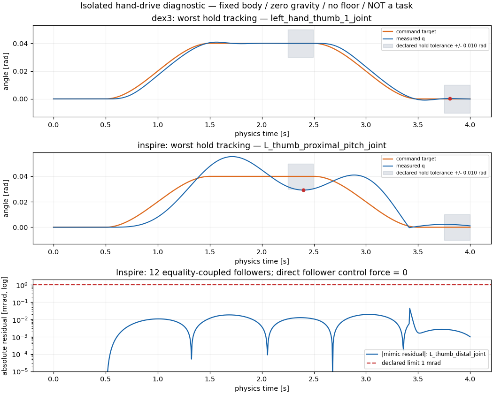
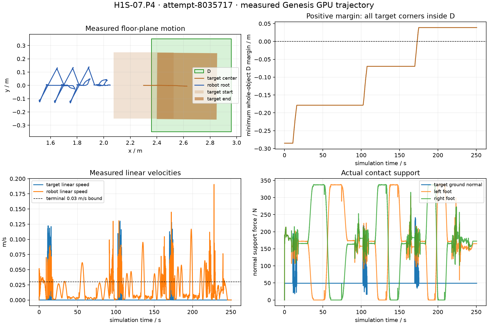

任务范围与场景
原始1.25米场景的分层证据交付；随机Layer1实例按四态记录
限定范围参考解与设计交付完成；固定成功、C026 seed 63/963 连续成功及 985 失败记录保留。5.26 GB 冻结包已上传 HF，远端大小与 SHA-256 核验通过。
先把支撑物搬到取物区，再登高、取物、下降和交付。支撑物位置决定足部落点和上肢可达性；登高前必须形成稳定支撑，不能以取物评分时间替代落脚完成时间。
20 项已有场景拆分＋2 项新增操作：自主中转与安全返回、窄工作区身体适配。原 H1S-07／10／11 仅作分组，不重复计数。不新增两种身体／手共同可解的简单校准任务。所有满足最终目标和公开约束的合法完整解均计成功，参考路线不是隐藏评分条件。
| ID | 任务 | 证据范围 |
|---|---|---|
| H1S-01 | 原版 | 原范围参考 |
| H1S-02 | G1 五指灵巧手 | unknown |
| H1S-03 | 轮式＋斜坡 | unknown |
| H1S-04 | A3 | unknown |
| H1S-05 | G1 两层阶梯，A3 一层 | unknown |
| H1S-06 | 完成不了的 case | unknown |
| H1S-07.P1 | 推箱清路后取物 | unknown |
| H1S-07.P2 | 推箱到位作平台 | unknown |
| H1S-07.P3 | 转角或换侧推箱 | unknown |
| H1S-07.P4 | 抬不起但能推到目标区 | unknown |
| H1S-08 | Stretch＋有把手箱 | unknown |
| H1S-09 | Stretch 拒答 case | unknown |
| H1S-10.A | G1 多箱选择与布置 | unknown |
| H1S-10.B | A3 多箱选择与布置 | unknown |
| H1S-10.C | 轮式平台与坡道选择 | unknown |
| H1S-10.D | Stretch 工作／中转箱选择 | unknown |
| H1S-11.A | 直接可取场景 | unknown |
| H1S-11.B | 工具扩展取物能力 | unknown |
| H1S-11.C | 工具也无法完成并退出 | unknown |
| H1S-12 | 同色干扰 | unknown |
| H1S-13 | 自主中转与安全返回 | unknown |
| H1S-14 | 窄工作区身体适配 | unknown |
2 kg 是当前新设计的保守载荷筛选上界，适用部件、姿态和动态条件仍需核验；它不是整机质量上限，也不自动认证任一身体。不可完成时允许全员实际进入 Q、空手独立停稳 3 秒；正确放弃需完整路线排除证据，未知不算已认证无解。
完整任务卡 · H1 / M1 / M3 · JSON
已按用户要求启动实现与 Gamma GPU 开发验证；逐次结果及详细要求见下方实施记录。原参考评分和证据范围保留。
实现合同、候选专家计划、真实物理运行及正式准入分别记录。以下只报告本轮证据；旧 H1 的成功率不转移到新场景。
22 项实施已启动，候选 high/low-level 合同已生成。当前保留 14 个作业，11 个有已封存物理记录（含 3 个诊断运行），0 项有本轮原生评分完整见证；另有 6 个被动资产检查单独记录。诊断运行和资产检查不能计完整任务见证；不表示全部任务完成或正式准入。
原发布标准的五条共用安全规则也属于验收范围；v3 起已记录并独立复核原五规则所需通道；早期缺失不补作通过。仅通过几何、速度和执行器峰值检查，不等于已通过全部发布规则。
| 任务 | 作业 | 类别 | 执行状态 | 物理结论 |
|---|---|---|---|---|
| H1S-07.P4 | 8034725 | 任务尝试 | FAILED | 物理启动前失败，保留异常，不计物理执行。 |
| H1S-07.P4 | 8034773 | 任务尝试 | FAILED | 有真实物理记录，未通过完整成功判定。 原因：missing_or_invalid_evidence:FileNotFoundError:[Errno 2] No such file or directory: 'humanoid/g1_support_retrieval/extension/validation/attempt-8034773/execution_identity.json', original_five_rule_safety_failed_or_coverage_not_verified, joint_position_overshoot=0.004651170rad > original_standard=0.001rad 日志最近实测 t=241 s，阶段 hold_both。 |
| H1S-07.P4 | 8034839 | 任务尝试 | COMPLETED | 有真实物理记录，未通过完整成功判定。 原因：actuator_max_position_overshoot, original_five_safety_rules_unknown, original_five_rule_safety_failed_or_coverage_not_verified, joint_position_overshoot=0.004584532rad > original_standard=0.001rad 日志最近实测 t=248 s，阶段 hold_both。 |
| H1S-07.P4 | 8034905 | 任务尝试 | COMPLETED | 有真实物理记录，未通过完整成功判定。 原因：actuator_max_position_overshoot, original_five_safety_rules_unknown, original_five_rule_safety_failed_or_coverage_not_verified, joint_position_overshoot=0.004719417rad > original_standard=0.001rad 日志最近实测 t=235 s，阶段 hold_both。 |
| H1S-07.P4 | 8035059 | 任务尝试 | FAILED | 有真实物理记录，未通过完整成功判定。 原因：actuator_max_position_overshoot, original_five_safety_rules_unknown, original_five_rule_safety_failed_or_coverage_not_verified, joint_position_overshoot=0.004585128rad > original_standard=0.001rad 日志最近实测 t=246 s，阶段 hold_both。 |
| H1S-07.P4 | 8035603 | 短程诊断 | FAILED | 短程控制器诊断，不计完整任务见证。有真实物理记录，未通过完整成功判定。 原因：final_released_stable_dwell_too_short, original_five_safety_rules_unknown, original_five_rule_safety_failed_or_coverage_not_verified 日志最近实测 t=19 s，阶段 planned_steps_both。 |
| H1S-07.P4 | 8035684 | 任务尝试 | CANCELLED by 17237 | 排队期间取消，以纳入启动前审查修正；零物理步。 |
| H1S-07.P4 | 8035717 | 任务尝试 | COMPLETED | 有真实物理记录，未通过完整成功判定。 原因：original_five_safety_rules_failed, original_five_rule_safety_failed_or_coverage_not_verified 日志最近实测 t=250 s，阶段 hold_both。 |
| H1S-07.P4 | 8035839 | 任务尝试 | COMPLETED | 有真实物理记录，未通过完整成功判定。 原因：original_five_safety_rules_failed, original_five_rule_safety_failed_or_coverage_not_verified 日志最近实测 t=262 s，阶段 hold_both。 |
| H1S-07.P4 | 8035840 | 任务尝试 | COMPLETED | 有真实物理记录，未通过完整成功判定。 原因：actuator_max_position_overshoot, original_five_safety_rules_failed, original_five_rule_safety_failed_or_coverage_not_verified, joint_position_overshoot=0.003747418rad > original_standard=0.001rad 日志最近实测 t=252 s，阶段 hold_both。 |
| H1S-07.P4 | 8036294 | 短程诊断 | COMPLETED | 短程控制器诊断，不计完整任务见证。有真实物理记录，未通过完整成功判定。 原因：actuator_max_position_overshoot, diagnostic_or_partial_start_never_full_witness, final_released_stable_dwell_too_short, exact_physics_command_coverage_mismatch, diagnostic_or_partial_start_never_full_witness, joint_position_overshoot=0.002765279rad > original_standard=0.001rad 日志最近实测 t=125 s，阶段 stand_up_both。 独立诊断报告：未通过。 |
| H1S-07.P4 | 8036707 | 短程诊断 | COMPLETED | 短程控制器诊断，不计完整任务见证。有真实物理记录，未通过完整成功判定。 原因：diagnostic_or_partial_start_never_full_witness, final_released_stable_dwell_too_short, diagnostic_or_partial_start_never_full_witness 日志最近实测 t=24 s，阶段 hold_both。 独立诊断报告：通过。 |
| H1S-07.P4 | 8036941 | 任务尝试 | RUNNING | 作业运行或排队中；尚无已封存物理结果。 |
| H1S-01 | 8034801 | 原基线复跑 | FAILED | 有真实物理记录，未通过完整成功判定。 本次原始专家在放置准备时接触 QP 迭代达到上限；完整动作链未完成。 日志最近实测 t=434.22 s，阶段 walk:gate。 |
Execution ledger JSON · Requirements JSON · High / low-level candidate plans
当前身体与手型选择：Stretch 3、Dex3 与 Inspire · G1 matched-body static audit
6 个开发身体候选已完成 Gamma GPU 被动物理加载检查；没有稳定、行走或操作控制器，任务成功为 null。导入器碰撞过滤与惯量近似保留在审计中，不算 22 项完整成功。
| 模型 | 物理步／仿真秒 | 末态线速度 m/s | 中性碰撞过滤对数 |
|---|---|---|---|
| a3_t3d0 | 400 / 2 | 0.597261 | 10 |
| stretch4_francis_sg4 | 400 / 2 | 0.000139 | 22 |
| g1_inspire_DFQ | 400 / 2 | 0.511504 | 2 |
| galaxea_r1_v2_1_0 | 400 / 2 | 0.001478 | 5 |
| stretch3_SE3_dw3_sg3 | 400 / 2 | 0.000000 | 23 |
| g1_rev1_Dex3 | 400 / 2 | 1.082938 | 0 |
固定版本、许可证与来源 · JSON · 原始状态、日志与哈希
两型各 800 步／4 秒。夹具显式锁定身体，零重力、无地面；只检查小幅手指指令和 mimic 耦合，不是抓取、平衡或 H1 任务成功。
| 手型／作业 | 局部指标 | 最大关节越限 mrad | 保持跟踪误差 mrad | mimic 残差 mrad |
|---|---|---|---|---|
| dex3 / 8036535_0 | 通过 | 0.057 | 0.270 | N/A |
| inspire / 8036535_1 | 未通过 | 0.741 | 10.777 | 0.0437 |
Inspire 的 12 个从属关节直接控制力为零，mimic 误差满足 1 mrad；当前拇指跟踪误差 10.777 mrad 超过预声明的 10 mrad，因此本控制配置未通过。

完整局部审查、固定条件与原始状态下载 · JSON · SHA-256 manifest
打开交互轨迹浏览器：时间轴、high/low-level 阶段与实测位置
Gamma allocation ledger · Expert source and data-flow index · Frozen repetition identities and GPU differences
作业 8035717 尚未形成合规完整见证。图和视频展示真实运动，不能代替严格判定。失败、缺失和原始技能边界未知均保留在报告中。

视频为压缩预览；全量数值轨迹为无损原数据，原视频哈希和保存位置见清单。
Strict outcome · High / low plan · Observed plan mapping · Full state trajectory · gzip
站点保留全量状态轨迹；完整关节、控制及逐物理步数组保存在共享工作区，路径及哈希见证据清单。站点容量上限为 256 MiB。
Local evidence export and SHA-256 manifest · Hosted subset and local-only paths · Frozen baseline execution report · Baseline high / low / trajectory mapping
本轮资产补齐： 六组独立Gamma被动检查均已完成400步／2秒、401状态：A3 T3.0、历史Stretch 4、G1＋Inspire DFQ、Galaxea R1、当前Stretch 3以及官方G1 rev1.0＋Dex3-1。R1 mesh 许可／再分发缺口保留。详见 官方资产与实测报告、JSON。当前选型表已按用户资料更新；Stretch 3作业8036300与官方Dex3作业8036343结果已单列，旧Stretch 4不替代它。有模型不等于手部／传感器／控制器和任务配置已冻结。导入器中性碰撞过滤、惯量近似和无稳定控制均明确保留；这些检查不算任务成功。
手部驱动另记两组： 官方Dex3-1与Inspire DFQ各完成800步／4秒、801状态的隔离驱动实验，不加入上面的6组被动检查，也不计H1任务成功。fixture锁定29个身体关节、固定根、零重力、无地面，手部关节XML原样保留。Dex3的14个候选驱动局部响应指标通过；Inspire的12个mimic等式已实测，最大残差 0.043744 mrad、followers直接控制力全部为0，不能再泛称耦合未验证。Inspire当前PD左拇指hold跟踪误差 10.7767 mrad > 10 mrad 预声明门槛，局部整体判据未通过；这要求控制修订，不证明模型不可行。抓取/接触、全身平衡、真实硬件电机映射、传感器和完整任务仍未验。见手部驱动实测、数值与来源、本地资产与手部证据包清单。
2026-10-27 · h1-implementation-status/1 · 作者侧开发材料
本轮用户已明确授权 Gamma GPU + sub-agent 实现和物理验证。这覆盖旧设计文档中的“暂停/不恢复仿真”描述。当前 22 项的编号和计数保持不变，H1S-07/10/11 仅是分组；Go1+臂和额外共同可解校准任务不在范围内。
本文件记录可执行实现应满足的要求及资产审计快照，不把候选专家链、代码生成结果、静态测试或已有历史轨迹记作本轮新成功。真实运行以独立 manifest、Slurm/GPU 身份和原始轨迹为准；主线程可在执行结束后将它们绑定至本账本。原 14 项统计、历史 H1 分数、失败记录与未签人工准入保持不变。
English · 机器可读账本 · 22 项任务 · 验收政策 · 任务验收 · 评测规程
用户补充官方资料后，明确以 G1 29DoF＋Dex3-1 为主线，Inspire 五指为优先对照，Stretch方向按 Stretch 3 的硬件资料继续。A3官方T3.0已缓存并有被动物理导入，可作为当前开发候选。官方IsaacLab对Dex3/Inspire的支持和XR对BrainCo的支持是平台能力资料，不等于这些手已经接入本项目Genesis专家控制。
先前Stretch 4的400步/2秒probe保留为探索证据，不能替代Stretch 3。Stretch 3官方来源正按 stretch_urdf@c8c6e27e1f87db126118049f22611399253cbe2b、stretch_mujoco@c78d6a1cd79bb5ead1b679610299563c1a91124a 做独立身份和身体对照审计；尚不据此宣称夹爪/传感器/控制器或取物链可用。所有P4 v2/v3以及已冻结v4 profile保留原模型/物性/控制身份，不因选型补充改写历史运行。当前矩阵已更新为Stretch 3与Inspire DFQ等明确候选。见正式选型与来源、同身体换手审计、Stretch 3实测、官方Dex3实测。
contact QP maximum iterations reached，原判分 0.1925、非 VOID、未完成。原约束检查通过不代表任务成功；一次规划失败也不是不可解证书。见 完整失败映射。task_success=false。旧 checker 曾误用 20 mrad，旧成功 verdict、源代码均保留并标为被严格重评取代。几何动作完成不等于合规完整见证。三次原 v2 全程均已完成并保留：
| 作业 | 仿真秒 | 最大关节越限 | 原1mrad任务判定 | 原细叶段（过/失败/未知） |
|---|---|---|---|---|
| 8034839 | 248.62 | 4.585 mrad | 失败 | 43 / 11 / 3 |
| 8034905 | 235.40 | 4.719 mrad | 失败 | 45 / 9 / 3 |
| 8035059 | 246.78 | 4.585 mrad | 失败 | 43 / 11 / 3 |
三次都达成几何交付，但原五规则所需完整接触/足底几何/实际有符号扭矩时间序列缺失，安全覆盖保持 unknown。三次 source/asset hash 与实际快照均一致；这是 0/3 合规完整见证，不是 3 次任务成功。见 独立复核汇总。新 v3 增加指令余量与原安全记录器，20 s 前缀最大超限 0.493 mrad；三次完整作业随后都真实执行，结果见下表。前缀不算全程成功。
v3 原五安全规则已完整测量，三次仍为真实失败：
| 作业 | 仿真秒 | 最大关节越限 | 原五规则失败 | r3宏效果 |
|---|---|---|---|---|
| 8035717（A4000） | 250.62 | 0.474 mrad，位置约束通过 | 右肘向上限推 8.00 s | 8段效果实测通过，但安全门失败 |
| 8035839（A5000） | 262.76 | 0.562 mrad，位置约束通过 | 右肘向上限推 5.14 s | 尾段clear_hands有0.04s双足失载 |
| 8035840（A5000） | 252.18 | 3.747 mrad，位置约束失败 | 左肘向上限推，最长4.44 s | 尾段也有双足失载样本 |
这里“限位推”按原规则判：距物理限位≤0.02 rad、向外实际控制力矩超过限额50%、持续至少2 s；不是只检查角度未越过硬限位。第二次右肘实际角度2.07451–2.08015 rad，物理上限2.0944 rad，力矩12.51–20.07 Nm（限额25 Nm）。其双足失载为240.42/240.44s两样本，0.04s未达到原near-fall规则0.06s，因此原rule1不触发，但预先声明的作者宏“每个采样至少一足支撑”仍判失败，不事后放宽。
三次独立source/asset/pre-post/manifest身份核验全部一致；原五规则coverage完整但判失败，新增合规完整见证仍为0。见独立v3审查及数值失败细节。v4修复与诊断结果见下；所有旧失败保留，原物理限制和安全阈值不变。
v4诊断8036294已按预声明wall预算停止于125.84模拟秒，StandUp尚未完成：原五规则对已记录区间通过，但腰俯仰实际越限2.765mrad（原门槛1mrad），104.16/104.18秒双足失载，且中断末端的精确physics command覆盖不完整；不能称诊断通过。肘参考≤2.0rad和末段手指参考内缩≥.06rad实测通过，仅证明这两项指令修复。见独立v4审查。
新v5是另一个运行前预声明的合法专家路线：前两轮仍推动、撤手、移步；末轮推动和撤手后，直接安全蹲姿settle并保持6秒，省去为下一次推动准备的无用移步及末段起立。原任务不要求站立，但原五规则、1mrad、逐帧足支撑、目标D和3秒驻留全部保留。单cycle fresh-start诊断8036707已提交，合同SHA 58151ac4781bb43abf65978928a692ae315f0ed7ed4f0f7830a95c18d76c60d5；它本身永不算完整任务见证，完整三轮仍须原始起点新跑。
本轮P4的精确范围是单seed无把手宽箱：目标材质friction=.5，继承plane材质friction=.1，不将二者推断成接触对有效摩擦。.5不是“整个场景摩擦”。5kg超过公开2kg搬举载荷规则，不是机械上无法抬5kg的证明。三次为A4000/A5000上的同配置重复，不宣称同GPU确定性复现；把手配对、随机分布、sensor-only及正式准入仍未完成。
原 D／公开规则／预算在运行前冻结；细粒度语义审查是在作业启动后逐步开发，明确为 development/post-hoc audit，不回写成三次运行前全已声明。8034725 启动缺依赖、8034773 旧 recorder 诊断、同控制器其他重复及后续控制器修复分别保留，不跨修订合并成功率。新控制器只可调整规划和指令余量，不能放宽硬件或 1 mrad 规则；结果到齐后继续刷新。独立代码审查保留修复前后哈希与反例。
v5单轮诊断8036707已独立通过：24.76模拟秒／4952物理步，最大实际关节越限0.00786mrad，原五安全规则完整通过；3个预声明宏都有实测效果与连续共享轨迹，settle稳定1.02秒、Hold6.02秒。原细叶仍4通过／2失败（名义Touch退出同时接触、名义Push退出速度），没有改写成全过。D未达，因此依然0完整任务见证。完整三轮8036941已从原始起点按预冻结合同提交；结果待独立审查。见独立v5诊断。
每个声明可完成的任务/具体配置至少需要一个从生成器原始起点开始、由动作接口驱动的连续完整成功见证，以及可核对的 high-level → low-level → trajectory 映射。专家可读真值并调用 IK/FK/WBC，但不能在首个物理步后写关节/物体状态、瞬移、隐藏固定或改变物性/执行器限制。新控制器必须有自己的执行证据。至少一个完整见证是设计可行性门槛；代表配置三次独立初始化重复、每条日志三次判分、人工审阅和第二人复现分别报告。
“物理验证”在本项目指真实运行 Genesis 动力学、记录动作与接触及状态，不等于实体机器人实验。Gamma CUDA 设备使用要从作业和运行日志核实，不能仅凭提交了 GPU 请求宣称已运行。物理日志、动作日志与录像共享时间轴；视频人工审阅未完成时保持 pending。
高层计划记录目标、候选路线、必要资源、公开约束和未知项。低层段记录动作/控制器、入口/出口、接触、抓持、支撑、速度及预算。trajectory 保存实际发出的动作与仿真测得状态，而不是仅有期望关键点。每段绑定 run_id、step 起止、父高层节点、源代码与场景身份。必须检查真实段间状态，不能用检查点拼接冒充全程。
下面为开发预算提案，只有写入具体任务运行 manifest 后才生效，不得事后反称已预声明：单实例静态/局部筛查墙钟 60 s、最多 3 条候选路线、最多 2 次短物理探针、每次不超过 1000 物理步；每个代表配置最多 3 次完整运行，每次单独 run_id，墙钟上限 3600 s。完整运行仿真时限继承所选 runtime 的任务上限，须在运行 manifest 写为数值。token、观测、控制步与 reset 预算同样在 runnable manifest 冻结；未冻结不得宣称正式 agent 评测。
完整运行和筛查是分别预声明的工作，短探针耗尽不自动升级全程。开发参数修订可以继续，但必须新建 manifest，保留之前所有尝试、失败、超时和来源。三次重复不等于三个独立 seed。正式抽样不能换掉失败 seed；自生成开发场景须保留采样和拒绝原因。
推荐顺序是：先用现有 G1/Dex3 验证原 H1 绑定及中转/推箱可复用链，再做 G1 新任务场景；官方五指/A3/Stretch 3已完成资产选择和被动检查，按剩余驱动、接触与稳定控制缺口推进，轮式候选继续明确任务绑定。这个顺序只影响调度，不减少 22 项目标。
实际数值见 p4-development.json，只适用于 g1_dex3_ground_push_v1。1 张 Gamma GPU；每次墙钟 3600 s、仿真 600 s，physics dt=0.005 s、control dt=0.02 s，最多 120000 物理步/30000 控制步，1 条候选、筛查 60 s、0 个短探针、0 次中途 reset，计划 3 次代表重复。确定性专家不调用语言模型，因此 token budget 为 null 并有明确原因；每控制步真值观测，上限 30000。
目标是 0.45×0.50×0.18 m、5 kg 的地面箱；初始中心 (2.30,0,0.09)，D 中心 (2.66,0)、大小 (0.60,0.70) m。公开规则是搬举载荷上限 2 kg，允许地面承托推动；这不构成机器人“物理上抬不起 5 kg”的证明。验证完整目标 AABB、地面独立承托、脱离手接触、速度及连续 3 s 驻留。runner 已真实执行；8034839 几何终态完成但原 1 mrad 执行器规则不通过，当前仍无新增合规完整见证。新运行不继承旧推箱的成功标签。
可执行候选合同编译入口为 python -m infra.h1_tasks compile --out infra/planning/h1-extension/implementation-contracts.json，输出 22 项 h1-execution-contract-catalog/1。其专家计划包含子目标、低层动作、前后条件及支撑/接触约束，trajectory 在真实执行前保持 null。编译与证据检查代码不等同控制器、场景或物理运行完成。
官方静态选型已明确，初始“未找到/待选”快照仅保存在JSON的 initial_asset_inventory_history。下面列当前事实及剩余控制工作；选型与同身体审计保留精确commit、模型、mesh及许可信息。
| 配置 | 当前事实 | 剩余实现 |
|---|---|---|
| 历史Menagerie G1＋Dex3 | 现有43执行器运行时；P4 v2/v3实际失败轨迹保留，v4修复诊断另记 | 完整合规专家见证仍未得到；不得转记为官方rev1.0身体证据。 |
| 官方G1 rev1.0＋Dex3-1 | 400步被动导入已完成；另8036535_0的800步隔离驱动局部响应指标通过 | 局部驱动通过不代表整机稳定；抓取/接触、传感器与任务仍未验证，导入惯量近似保留。 |
| 官方G1 rev1.0＋Inspire DFQ | 同身体29活动＋7固定关节／37共用links；来源固定。隔离fixture的12 mimic已实测，残差≤0.043744mrad、followers直接力0 | 当前PD拇指hold误差10.7767mrad>10，需控制修订；抓取/接触、平衡、硬件驱动映射及同任务配对仍未验。 |
| Agibot A3 T3.0 | 官方资产/MulanPSL-2.0、独立SONIC参考固定；400步被动导入完成 | Genesis控制器移植、传感器/末端和完整取物/返回任务。 |
| 轮式候选Galaxea R1 | 固定官方候选并完成被动导入，当前任务轮式选型仍未最终锁定 | mesh再分发/许可缺口、底盘/臂控制与坡道完整任务。 |
| Stretch 3 SE3/sg3 | 官方未标定URDF、标准柔顺夹爪和D405已选；8036300已完成400步被动导入 | 保留23对中性碰撞过滤和惯量近似；底盘/臂/夹爪主动控制、传感器和任务全链未验证，不用旧Stretch4替代。 |
| ID | 配置与阶段 | 必须实现的场景 | 当前主要缺口 |
|---|---|---|---|
| H1S-01 原版 | G1 + Dex3；frozen_baseline_executed_qp_failure |
先复核原配置；独立生成本轮全程，不将旧发布数字重复记为新增。 | 原冻结源身份及已执行段映射已核查；修复放凳对齐 QP 控制，重新从原始起点完成全链，补细粒度复核与人工审阅。 |
| H1S-02 G1 五指灵巧手 | 官方G1 rev1.0 Dex3-1 / Inspire DFQ；isolated_hand_drive_measured_task_control_pending |
同世界、相同宽箱/载荷和预算；允许各手适配控制器。 | 隔离fixture的12 mimic耦合已实测（≤0.043744mrad、followers直接力0）；当前PD拇指hold误差10.7767mrad>10未过。抓取/接触、平衡、硬件驱动映射、传感器与同身体完整任务仍未验，不称模型不可行。 |
| H1S-03 轮式＋斜坡 | 轮式型号待选；asset_binding_missing |
斜坡初始未就位；机器人自主搬/推、搭接，再上台取物并带载返回。 | 轮式整机型号/驱动、坡道动态模型、搬推控制及带载坡道证据缺失。 |
| H1S-04 A3 | A3 T3.0 官方候选；asset_binding_missing |
独立 A3 高柜取物；matched_world 与专用场景分别报告。 | A3 T3.0官方资产/许可与被动导入已完成；SONIC参考尚需Genesis移植，末端/传感器/全程任务控制待验。 |
| H1S-05 G1 两层阶梯，A3 一层 | G1 + Dex3 / A3；paired_asset_and_scene_missing |
同世界检查 G1 两级与 A3 一级；层级可达包含柜深和抓取姿态。 | A3 T3.0资产已选但控制与任务未绑定；G1多箱布置和完整往返仍缺物理证据。 |
| H1S-06 完成不了的 case | 首版优先已绑定 G1；certificate_and_exit_pending |
以最小改动配对可解场景；检查全部合法替代路线后判断。 | 全路线必要条件证书、配对成功、Q 场景/传感器/物理验证未冻结。 |
| H1S-07.P1 推箱清路后取物 | 首版 G1，其他身体分别绑定；scene_and_chain_pending |
障碍箱挡工作位；清路后从同一次运行继续高柜取物。 | 旧推箱技能可复用，但障碍/停车布局、全链衔接和新物理见证缺失。 |
| H1S-07.P2 推箱到位作平台 | 首版 G1，轮式须另有坡道；scene_and_chain_pending |
支撑箱起始未到工作位；实际推到位后登高取物。 | 完整取物/下降/交付连续链，以及新场景初态和评分绑定。 |
| H1S-07.P3 转角或换侧推箱 | 首版 G1，其他身体单独验证；scene_and_chain_pending |
障碍限制直线推；保留换侧入口及下一段扫掠空间。 | 转角场景、换侧足步控制及整段连续物理证据。 |
| H1S-07.P4 抬不起但能推到目标区 | 首版 G1，带/无把手配对；development_diagnostic_passed_full_validation_running |
目标在地面；5 kg超过公开2 kg搬举载荷上限，仍允许地面承托推动至D；不是机械不可能证明。 | 旧完整运行失败保留；v5单轮预声明宏诊断通过，完整三轮8036941实测中，尚无合规完整见证。 |
| H1S-08 Stretch＋有把手箱 | Stretch 3（SE3/sg3）；asset_binding_missing |
明确定义有把手箱是目标还是支撑；单臂不能隐含双手交接。 | Stretch 3官方未标定模型/标准夹爪已选；Genesis底盘/臂/夹爪控制、传感器实现和任务角色绑定待验。 |
| H1S-09 Stretch 拒答 case | Stretch 3（SE3/sg3）；asset_and_certificate_missing |
保持与可解场景可比；无把手本身不足证明不可完成。 | Stretch 3官方资产已选；实际控制、反例必要条件证书与物理Q退出未完成。 |
| H1S-10.A G1 多箱选择与布置 | G1 + Dex3；scene_and_chain_pending |
多个高低/宽窄箱，起初均非工作位；选择可搬推、可登、可达且能返回的方案。 | 候选尺寸/承载/摩擦与标签需标定，旧 layout 只几何筛查。 |
| H1S-10.B A3 多箱选择与布置 | A3；asset_binding_missing |
先固定 10.A 的世界，仅换真实 A3；A3 专用世界单独标记。 | A3 绑定和 10.A 同世界基线均待完成。 |
| H1S-10.C 轮式平台与坡道选择 | 轮式型号待选；asset_binding_missing |
多个平台与可移动斜坡组合；连续滚动入口和带载返回共同成立。 | 轮式绑定、动态坡道/平台组合、自动布置完整见证。 |
| H1S-10.D Stretch 工作／中转箱选择 | Stretch 3（SE3/sg3）；asset_binding_missing |
箱子作为工作/中转面；登台版本只有另验有效坡道才开放。 | Stretch 3控制/传感器绑定、箱角色/把手净空、单臂中转完整链待验。 |
| H1S-11.A 直接可取场景 | Stretch 3（SE3/sg3）；asset_binding_missing |
近处目标是现有拆分控制项；不再新增共同可解任务。 | Stretch 基础抓取/运输与完整可解控制证据。 |
| H1S-11.B 工具扩展取物能力 | Stretch 3（SE3/sg3）；asset_and_tool_mechanism_missing |
深柜目标有环和把手；柜前支撑区允许单臂先拉近再换抓。 | Stretch 3控制绑定、被动钩/环动力学与接触、两侧对照和完整见证待验。 |
| H1S-11.C 工具也无法完成并退出 | Stretch 3（SE3/sg3）；asset_and_certificate_missing |
最小改变深度等瓶颈，所有可用工具也无法完成；与 B 分开统计。 | 资产/工具绑定、完整必要条件证书、物理退出。 |
| H1S-12 同色干扰 | 首版 G1 + Dex3；perception_scene_pending |
至少同色目标替身与同色工具，编号/图案及空间关系仍可唯一识别。 | 可见编号材质、相机证据、同色/弱支撑物理机制和全程验证。 |
| H1S-13 自主中转与安全返回 | G1 + Dex3；reusable_relay_runtime_new_scope_pending |
轻物取出后自主选择带载返回或中转；不以精细卡整机承重阈值强造中转。 | 新目标/场景配置与连续链、三层映射；旧资料仅作具体技能参考。 |
| H1S-14 窄工作区身体适配 | G1 + Dex3 / A3；scene_and_paired_asset_pending |
柜前窄通道/转向空间约束整机、工具和目标扫掠；首版不做复杂蹲钻。 | 窄场景碰撞/传感器设置、G1 连续返回及 A3 资产/控制。 |
这些路线用于作者实现与复核，不进入 agent 指令，也不是隐藏的唯一成功条件。H1S-01 与 P4 已有本轮失败/部分物理 trajectory 绑定；其余仍为候选，不据此宣称完整成功。
High-level： 观察 → 布置支撑 → 登高 → 取物 → 返回 → 交付。
Low-level： 接触抓/推、足步与 WBC、抓取抬离、载荷姿态、中转/下降、释放驻留。
物理验收： 绑定原场景、旧评分及公开限制；新运行有独立 run_id；任何扩展新规则不得追溯改变原成绩。
剩余实现： 原冻结源身份及已执行段映射已核查；修复放凳对齐 QP 控制，重新从原始起点完成全链，补细粒度复核与人工审阅。
可复用来源：humanoid/g1_support_retrieval/relay_env.py、humanoid/g1_support_retrieval/relay_spec.py、humanoid/g1_support_retrieval/oracle。这些来源不自动转为本任务完整见证。
High-level： 观察抓持几何 → 选抓法 → 搬/推支撑 → 取物 → 返回交付。
Low-level： 手指闭合/接触、腕矩限制、双手载荷分配、重抓和放置。
物理验收： 五指优势是待检假设；Dex3 局部滑移不是全局不可解证书；每种手均记录完整重复结果。
剩余实现： 隔离fixture的12 mimic耦合已实测（≤0.043744mrad、followers直接力0）；当前PD拇指hold误差10.7767mrad>10未过。抓取/接触、平衡、硬件驱动映射、传感器与同身体完整任务仍未验，不称模型不可行。
可复用来源：humanoid/g1_support_retrieval/solution/side_carry/README.md、humanoid/g1_support_retrieval/solution/underhand_lift/README.md。这些来源不自动转为本任务完整见证。
High-level： 观察 → 选择坡道/平台 → 布置 → 登坡 → 取物 → 下坡 → 交付。
Low-level： 夹持/推移板件、板端搭接与稳定、轮接触驱动、坡面制动、转向和下放。
物理验收： 需连续轮地/轮坡支撑、离地间隙、板端/平台足够面积与真实承载；预置坡道只能另记 use-only 诊断。
剩余实现： 轮式整机型号/驱动、坡道动态模型、搬推控制及带载坡道证据缺失。
High-level： 观察 → 支撑选择/布置 → 登高 → 取物 → 返回交付。
Low-level： 全身接触控制、A3 末端抓取、登阶、负载返回。
物理验收： 不得把 G1 资产缩放或改显示名称当 A3；不根据身高宣称可解。
剩余实现： A3 T3.0官方资产/许可与被动导入已完成；SONIC参考尚需Genesis移植，末端/传感器/全程任务控制待验。
High-level： 观察 → 选择/布置阶梯 → 逐级登高 → 取物 → 下降 → 交付。
Low-level： 搬放上层支撑、足步落点、接触切换、负载重心与逐级下降。
物理验收： 几何高度和静态 IK 不足；每级入口/踏面/载荷/返回都须验证；合法一级 G1 解出现即修订机制标签。
剩余实现： A3 T3.0资产已选但控制与任务未绑定；G1多箱布置和完整往返仍缺物理证据。
可复用来源：humanoid/g1_support_retrieval/solution/carry_climb_retrieve/layout.py、humanoid/g1_support_retrieval/solution/carry_climb_retrieve/README.md。这些来源不自动转为本任务完整见证。
High-level： 观察/安全探测 → 评估路线 → 安全收拢 → 前往 Q → 停稳。
Low-level： 卸载/撤臂、避障行走、全包络入 Q、足地接触、速度驻留检查。
物理验收： 物理 safe_exit 与 correct_abstention 分开；没有证书时正确性为 null；预算耗尽不证明无解。
剩余实现： 全路线必要条件证书、配对成功、Q 场景/传感器/物理验证未冻结。
High-level： 观察 → 推障碍停车 → 布置/接近 → 取物 → 返回交付。
Low-level： 双手贴合、推力/摩擦反馈、移步、撤手、清空扫掠空间、接续抓取。
物理验收： 只推开障碍不算任务成功；停车区需不阻塞返程；合法绕行完成仍接受。
剩余实现： 旧推箱技能可复用，但障碍/停车布局、全链衔接和新物理见证缺失。
可复用来源：humanoid/g1_support_retrieval/solution/push_box/README.md。这些来源不自动转为本任务完整见证。
High-level： 观察 → 推支撑到位 → 验稳定 → 登高 → 取物 → 返回交付。
Low-level： 接触推移、落脚接近、支撑静置、登阶、抓取、下降。
物理验收： 位置容差由可达/支撑需求决定；旧推箱+登箱成功不包含取物返回；合法组合支撑接受。
剩余实现： 完整取物/下降/交付连续链，以及新场景初态和评分绑定。
可复用来源：humanoid/g1_support_retrieval/solution/push_box/README.md。这些来源不自动转为本任务完整见证。
High-level： 观察 → 第一推段 → 脱离换侧/转向 → 第二推段 → 完成取物/交付。
Low-level： 手箱接触、退步/转向、重新接触、箱体偏航控制、停止。
物理验收： 检查整机/手臂/箱扫掠；转角前后姿态速度真实连续；未执行换侧不假记技能完成。
剩余实现： 转角场景、换侧足步控制及整段连续物理证据。
可复用来源：humanoid/g1_support_retrieval/solution/push_box/README.md。这些来源不自动转为本任务完整见证。
High-level： 观察 → 选择合法接触 → 推向 D → 减速 → 撤手驻留。
Low-level： 推力/偏航调节、移步、受控停止、撤离接触。
物理验收： 正确目标完整进入地面 D 且独立稳定；此任务不要求高柜取物；不能凭一次举失败声称抬不起。
剩余实现： P4 开发 runner 和数值预算已落地；等待真实 Gamma 作业结果与全程证据复核，把手配对、更多 seed、独立重放和人工审阅未完成。
可复用来源：humanoid/g1_support_retrieval/solution/push_box/README.md。这些来源不自动转为本任务完整见证。
High-level： 观察 → 接近把手 → 抓持 → 撤出/运输 → 下放交付。
Low-level： 夹爪闭合、升降柱/伸缩臂、腕姿与偏载控制、底盘转向。
物理验收： 实测把手净空、腕矩、轮地稳定；不得默认 Stretch 会登直角箱。
剩余实现： Stretch 3官方未标定模型/标准夹爪已选；Genesis底盘/臂/夹爪控制、传感器实现和任务角色绑定待验。
High-level： 观察/探测 → 排除抓/推/托/工具路线 → 安全到 Q。
Low-level： 工具/目标卸载、收臂、底盘导航、空手稳定驻留。
物理验收： 证书涵盖推、托、侧抓、翻转、工具/环境辅助；未测试路线导致 unknown。
剩余实现： Stretch 3官方资产已选；实际控制、反例必要条件证书与物理Q退出未完成。
High-level： 观察候选 → 路线筛查 → 布置选定组合 → 取物 → 返回交付。
Low-level： 抓/推布置、足步落点、支撑接触检查、抓取与负载返回。
物理验收： 不按预定箱号评分；最高箱可能不可登；单箱不可用不能推出组合无解。
剩余实现： 候选尺寸/承载/摩擦与标签需标定，旧 layout 只几何筛查。
可复用来源：humanoid/g1_support_retrieval/solution/carry_climb_retrieve/layout.py。这些来源不自动转为本任务完整见证。
High-level： 观察候选 → A3 可达/支撑筛查 → 布置 → 取物 → 返回交付。
Low-level： A3 接触抓推/登阶/负载返回。
物理验收： 不强迫 A3 选择与 G1 不同箱；差异来自实测，不来自型号。
剩余实现： A3 绑定和 10.A 同世界基线均待完成。
High-level： 观察 → 选平台坡道组合 → 搬推布置 → 上台取物 → 返回交付。
Low-level： 板件抓推、搭接、底盘对正、上坡/转弯/制动。
物理验收： 平台有效顶面覆盖底盘及操作姿态；前轮上台而后轮悬空不算通过。
剩余实现： 轮式绑定、动态坡道/平台组合、自动布置完整见证。
High-level： 观察候选 → 选择可操作工作面 → 布置 → 取物/中转 → 交付。
Low-level： 把手抓/推、升降伸缩、稳定中转、放下后重抓。
物理验收： 单臂持物时后续操作须有独立承托资源；不能假定 Stretch 踩箱。
剩余实现： Stretch 3控制/传感器绑定、箱角色/把手净空、单臂中转完整链待验。
High-level： 识别 → 直接抓取 → 撤出 → 运输 → 交付。
Low-level： 夹爪把手接触、抬离/退臂、底盘运输、放开驻留。
物理验收： 无需工具；不能因为未用工具扣分；不能以此推断深柜 B 可解。
剩余实现： Stretch 基础抓取/运输与完整可解控制证据。
High-level： 取钩 → 接环 → 受控拉近 → 稳定脱钩 → 放钩 → 抓把手 → 交付。
Low-level： 真实手柄抓持/钩环接触、支撑滑移、腕矩调节、脱钩、二次抓取。
物理验收： 不绑定目标、不隐藏驱动远端夹口；无工具对照须排除全部合法路线；若无工具可完成则取消能力扩展标签。
剩余实现： Stretch 3控制绑定、被动钩/环动力学与接触、两侧对照和完整见证待验。
High-level： 观察/探测 → 评估所有工具 → 放下工具 → 到 Q → 驻留。
Low-level： 可控卸载/脱钩、收臂、轮式导航、全包络退出。
物理验收： 不能重复记入 09；有限 IK/搜索失败不是全路线证书。
剩余实现： 资产/工具绑定、完整必要条件证书、物理退出。
High-level： 移动视角 → 核对目标 → 选择可用工具 → 取正确目标 → 交付。
Low-level： 相机观测/换位、真实抓推/登高/返回。
物理验收： 颜色不能泄漏角色/承载；错箱入 D 得 0；标签遮挡时不得将真值身份暴露给 agent。
剩余实现： 可见编号材质、相机证据、同色/弱支撑物理机制和全程验证。
可复用来源：humanoid/g1_support_retrieval/relay_spec.py。这些来源不自动转为本任务完整见证。
High-level： 观察 → 支撑布置/登高 → 取物 → 选择返程 → 可选中转/重抓 → 交付。
Low-level： 负载姿态/重心、柜口撤出、独立中转释放、空载下降、重抓运输。
物理验收： 任何合法直接返回均成功；中转必要性另证；旧 relay 脚本需对齐新初态、目标身份和终态。
剩余实现： 新目标/场景配置与连续链、三层映射；旧资料仅作具体技能参考。
可复用来源：humanoid/g1_support_retrieval/relay_env.py、humanoid/g1_support_retrieval/oracle/stool_chain.py。这些来源不自动转为本任务完整见证。
High-level： 观察通道 → 选择朝向/支撑位置 → 取物 → 带载转向/返程 → 交付。
Low-level： 侧向/转向步态、臂部收拢、碰撞检查、目标扫掠与负载跟踪。
物理验收： matched_world 比较；不可由更大身体推定失败；目标到手仍被困不算成功。
剩余实现： 窄场景碰撞/传感器设置、G1 连续返回及 A3 资产/控制。
交付以正确目标的完整包络进入 D、独立承托、释放并稳定 3 s 为扩展草案；旧 H1 仍绑定其冻结评分。不能按使用预定箱号、必须中转、必须先失败或必须使用工具给最终成功设额外条件。合法替代解应接受并修订“必要工具/必要中转/不可解”机制标签。
Q 退出需整机水平包络在区内，全部承重足/轮有合法地面支撑，空手且无悬吊物，线速度 ≤0.03 m/s、角速度 ≤0.05 rad/s，连续 3 s 且无硬违规。这些数值是待按身体标定并冻结的草案。只经过、仅手臂进入、跌入、出生即在 Q、单帧静止或日志缺失都不构成退出。
safe_exit 仅表示退出动作完成；correct_abstention 必须有与初始场景、身体和公开限制匹配的全路线不可解证书。未知场景退出的正确性保持 null。可解场景退出是 false_abstention。有限搜索失败、预算耗尽、IK 无解、某个抓法失败或某条返程失败，不自动证明整个实例无解。
评分器至少覆盖：空操作、错箱、目标只部分入 D、抓持未放开、单帧入区、非法固定/状态写入、超限/穿模、支撑虚假接触、Q 跌入/擦边/持物/驻留不足、证书与场景不匹配、轨迹截断/重排、计划段被冒认为已执行段。正例由同一评分器判成功；负例需保存实际观测或明确标记为软件单元反例，不冒充 GPU 物理负例。
一个可复核的运行包至少包含以下材料：
manifest.json：任务、配置、世界、物理、资产/控制器/评分器哈希、环境版本、GPU/Slurm 身份、seed 和预算；manifest 在运行前冻结。high_level_plan.json 与 low_level_plan.json：候选路线、技能合同、实际执行状态和映射引用。mapping.json：HL_LL / LL_TRAJ / HL_TRAJ 对应、帧区间、实际入口/出口与通过或失败原因。verdict.json、原始 stdout/stderr、所有失败/中止尝试、视频与帧时序、必要的独立动作重放结果。更新采用 unknown → screen_pass / rejected / witnessed_full 的证据状态。screen_pass 不计物理成功，rejected 要标明仅路线还是整个实例及必要条件证据。文件存在、软件测试通过、GPU 作业提交、技能片段通过都不能自动提升为 witnessed_full。本账本不覆盖原登记 JSON 的历史“新增仿真 0”快照；主线程在具体结果到齐后可通过明确日期和运行清单同步当前状态，避免删除或改写历史。
未见配置的技能范围与动态筛查仍未确定；如发布新控制器，只补受影响的代表回归。人工签审、第二人复现和其他正式准入缺口仍保留，不要求每个随机实例完整求解。 分层证据与筛查 · 参考包与核验记录
H1 · 第一层 · 2026-10-25
22 个选定任务。利用环境支撑改变自己的工作位置，判断可达、载荷、落脚与重心边界，完成取物、安全返回和地面交付。允许自主中转及其他合法完整路线。
新增场景与能力配置待验证；现有成功记录只证明原配置与原评分范围。
原范围参考：历史参考已有 · 当前验证见实施账本 固定场景完整成功、重复及容器证据已具备；C026随机63与963完整成功。原三组账本为2个有完整成功证据、1个未确定，全部既有尝试保留。此处保留历史分层证据快照；本轮 Gamma 执行结果见上方实施账本。限定范围的参考发布包已上传 HF，换目录核验及远端大小与 SHA-256 核验均通过。
以下数字为原参考范围的证据，不是新任务族的验证进度。
验收登记通过项；8 项部分完成、1 项待完成。
复用原场景，保留绿色干扰箱。
持续力矩饱和阈值保持不变。
| 记录 | 已证明 | 当前结论 |
|---|---|---|
| C371 / C373 | 冻结 C371 的三次原始起点完整复跑全部通过（3/3；1003.36, 1003.16, 1004.16 秒），匹配 C373 的实际容器 LowCmd 全程通过（1003.12 秒）。四次均得分 1.0、非 VOID、无安全事件，LowCmd 零裁剪；源码与初始场景一致。 | 完整批次审计 |
| C365 original-start full-01 | 1003.00 s · 1.0 · non-VOID · no safety events | Audit · 24× video |
| C365 减速后的取物至交付诊断 | 从凳上检查点执行 195.60 秒：取箱、中转、下凳、重新抓箱和稳定交付全部通过；零关节越界、安全事件和持续饱和。 | 局部诊断通过；同版本随后取得上列原始起点完整成功。393 项 CPU 回归通过。审核记录 · 踝关节证据 |
| C357 原始起点 LowCmd 全程 | 通过双脚对齐，639.88 秒完成落凳；651.96 秒撤手时前倾与侧倾组合触发规则 1。双脚支撑和低速条件正常，侧倾超出受控前弯范围。 | 完整验证失败，尚不能发布。C359 验证撤手侧倾与偏航约束；安全规则保持不变。终局记录 |
| 原场景 C350 连续搬凳 | 17 步、约 1.014 米搬运，675.6 秒完成放凳、撤手与站稳。整段 710.50 秒、142,100 个物理步无安全事件和关节越界，最长饱和 1.98 秒。 | 上凳入口左脚误差约 13.9 毫米，超过 12 毫米门槛，控制器停止。得分 0.2，任务未完成；C353 的局部上凳修正已通过检查点诊断。完整尝试审计 |
| 原场景 C352 LowCmd | 160 秒、8,000 条指令、32,000 个物理步；无安全事件、关节越界、通道裁剪或漏传。最长饱和 1.74 秒。 | 诊断通过，已开始携凳迈步；完整任务 success=false。完整容器尝试在 403.34 秒因 IK 连续性保护停止，未发生安全事件；采样细化修复正在重新验证。审计 |
| C353 上凳与交付诊断 | 上凳新增 127.76 秒，凳上至交付新增 174.98 秒；两段均无安全事件、关节越界和持续饱和。旧取物路线完成取物、中转、下凳、重新抓取与交付。 | 均从检查点开始，不能拼接为原始起点完整成功。上凳审计 · 交付审计 |
| 当前平台检查 | 冻结 C371 的 399 项 CPU 回归通过；此前 36 项越权探测以及单层、三层空操作负控均符合预期。 | 主目录 GPU 传感器流水线已通过：保留初始姿态精度检查，增加实际腰部校准姿态，取得 1,013 个地面点，原精度与 1,000 点门槛不变。完整流水线仍受跨任务旧证据缺失阻塞。负控审计 · 传感器修复验证 |
| 以下为历史路线与开发试验；其中高层板试验不是当前发布前提。 | ||
| 历史 canonical c | 850.26 秒完整搬凳接力；旧 rubric 2.1 得分 1.0。 | 现行规则下腰部持续饱和超限，不能作为当前完整成功。 |
| 真实沙箱 reference-full-1 | 通过 LowCmd 动作通道完成整段执行。 | 腰部最长饱和 5.9 秒，success=false。判定 |
| 旧场景 direct-v8 | 站在地面抓住 1.25 m 层板的目标。 | 拉取时滑脱，未交付；旧几何未证明凳子必要。判定 |
| 新场景 candidate 02 | 135 秒、27,000 个物理步，非 VOID；关节越限为 0，最长腰部饱和 1.58 秒。 | 44.90 秒触发 rule 1：深前倾时速度波动打断稳定确认。双脚仍有承重；后续试验被拦截。判定 · 诊断 |
| 高处抓取与抬高站姿 | 离线规划可保留膝关节余量，并生成固定落脚位置的抬高路径。 | 仅为规划证据，尚未物理验证。静态筛选 |
| 新场景 candidate 04 起身与复跑 | 首次 85.88 秒诊断非 VOID、无安全事件，最长饱和 1.32 秒；同源码复跑却在 43.26 秒触发支撑确认超时。 | 首次通过不能作为稳定复现。复跑在 78.90 秒主动停止，因此正式记录为 VOID；未执行到放凳。首次判定 · 复跑诊断 |
| 新高层板 direct-v8 | 52.78 秒有效物理试验，无安全事件；目标未移动。 | 双手未能到达箱子两侧，未抓取或交付；仅是一条有效负例。结果 |
| 新候选 LowCmd 容器验证 | 2 秒启动短测通过。计划 90 秒的后续运行在 43.58 秒由沙箱自动结束：2,179 条指令、8,716 个物理步；非 VOID，无状态写入或通道裁剪。 | 正式判为失败：支撑确认超时。使用旧 C04 收凳动作，不是 C10 验证。正式结果 · 启动短测 |
| 高站姿返回下凳姿态 | 离线规划保留双脚位置，并检查速度、支撑余量、柜体净空与参考力矩。 | 历史落脚位置上的规划筛选，实际执行待验证。规划记录 |
| candidate 10 收凳修正 | 两次起身通过；搬凳随后完成 341.36 秒、68,272 步，非 VOID、无安全事件，最长饱和 1.32 秒。 | 第 18 步重心转移触及柜体净空检查，安全停止，尚未放凳。C19 提前 7 厘米停止后完成 17 步；随后放凳因右髋／膝碰凳而停止。全段 347.70 秒无安全事件，但未完成放凳。正式结果 · 放凳失败诊断 · 新参数与依据 |
| candidate 10 真实 LowCmd 通道 | 100 秒、5,000 条指令、20,000 个物理步；非 VOID、无安全事件、无状态写入或通道裁剪；最长饱和 1.78 秒。 | 完成起身并开始迈步，尚未走完或交付。完整任务 success=false，启动器退出码 1；诊断检查通过不改变任务判定。通道核对 |
| 地面单手前侧接触筛选 | C16 较远接近试验完成 92.62 秒、18,524 步，非 VOID、无安全事件或关节越限；抬高站姿稳定。 | 未找到最终接近路径，无目标接触或位移。它是一条安全的有限负例，仍不能确认全部地面路线不可行；首次靠柜过近的失败保留。安全试验 · 此前失败 |
| 高层板场景传感器校准 | 安全实跑的 C10 第 25 秒蹲姿检查点恢复误差为零；测得 2,935 个地面点，四项几何误差均通过原有阈值。 | 仅为该检查点的几何校准，新增物理步数为 0。初始姿态及腰部调整后的覆盖失败仍保留；目标可见性与感知来源尚未验收。通过测量 · 此前失败 |
| 目标传感器实测 | C10 第 90 秒安全检查点：LiDAR 命中目标 20 点，头部 RGB／深度中的目标像素为 0。 | 状态恢复误差为零，新增物理步数为 0；该姿态下目标在相机视野之外。几何可见性有证据，相机覆盖及纯传感器策略仍待验证。测量报告 · 实际 RGB |
| 地面全身姿态补充搜索 | 基于 C16 实际双脚位置，放开原策略的腰部、左手及手腕姿态限制后，找到局部预接触姿势。 | 只通过静态规划，尚无连续动作、接触或交付证据；凳子必要性继续保持未确认。规划记录 |
| 随机场景完整 100 秒沙箱诊断 | C18：5,000 条 LowCmd、20,000 个物理步，20 项通道审计全部通过；非 VOID、无安全事件，最长饱和 1.5 秒。 | 起身完成并开始迈步，整任务未完成。该 evaluation 样本已用于开发观察，不作为留出验收。正式结果 |
| 地面全身接触实跑 | C27 完成 135.54 秒、27,108 步，无安全事件或关节越限；实际目标接触峰值 5.62 N。 | 受原硬件限制的直接腿部力矩执行通过本次诊断，目标向柜内移动约 11.68 mm。尚未拉出或交付，凳子必要性未确认。物理结果 · 完整判定 · 末态几何 |
| 带载下放规划 | 旧下放参考的静态腰部需求约 50–51 N·m，已达到 50 N·m 硬件上限。C28 负载力矩与错误处理的 7 项 CPU 检查通过。 | 连续下放筛选均未通过几何或规划力矩余量门槛；最后一组到 36.8 秒时需求为 47.523 N·m。该余量是规划约束，50 N·m 硬件上限和 3 秒安全规则不变；C28 没有物理运行。负载分析 · 规划检查 · 凳架净空 |
| 地面搬移与动作通道验证 | C43 实跑通过短推 6.114 厘米、撤手和站直后连续 1 秒稳定；最终倾角 8.59°。C44 长推在 8.767 厘米触发原有 15 N 手部力保护，安全停止，无饱和、越界或安全事件。 | C47 真实 LowCmd 短推与站稳通过：87.88 秒、4,394 条指令、17,576 物理步，18 项审核全过，零饱和／安全事件。C48 推进 20 厘米后在撤手阶段触发力保护，C52 验证减速撤手。C49 步行未迈脚，C51 验证输入调整。完整取箱交付仍未通过。 最新证据 · C44 · C45 / C47 |
| 落凳前收脚修正 | C24／C26 均能收脚并站稳；下蹲仍触发腰部俯仰关节越限，诊断已停止并判 VOID，两次原始场景后续均取消。 | 提前转移重心、放慢下降尚不足，需继续处理带载腰部力矩。尚无落凳或整任务通过。C24 · C26 · 重心模型检查 |
| 安全抬头后的目标可见性 | C21 完成 22.46 秒、4,492 步抬头、保持及回正；非 VOID、无安全事件、无力矩饱和。相机安装不变，真实 RGB／深度看到目标 1,696 像素。 | 第 13.5 秒检查点恢复误差为 0；该姿态 LiDAR 目标命中为 0。不同姿态分别证明相机与 LiDAR 可见，尚无随机覆盖或纯传感器整任务成功。动作判定 · 测量 · 实际 RGB · 录像 |
| 第一层随机场景草稿 | 保留原随机范围，4,096 个样本几何有效。开发样本 seed1158 已完成原始起点抓凳起身：95.16 秒、19,032 步，无安全事件，最长饱和 1.06 秒。 | 局部原生诊断通过；尚无随机场景完整成功，边界与重复运行待验。起身结果 · 覆盖计划 |
| 随机场景 LowCmd 适配启动检查 | 独立封存的适配完成真实容器 2 秒、100 条指令、400 个物理步；非 VOID、无安全事件、无状态写入或通道裁剪。 | 后续 100 秒诊断已完成，结果见上表；完整任务 success=false。该已查看的评测划分样本不算留出验收，且不同于 C17 的开发场景。启动核对 |
C371 本批次第一次完整成功的 24 倍速录像。三次原生复跑和匹配通道均通过；以前的失败记录仍保留。交付包含从允许高度松手后箱体落地稳定，不表述为贴地轻放。
当前分层参考包已上传 HF，并完成远端大小与 SHA-256 核验。原固定 1.25 米场景的三次同源码原生全程、匹配 LowCmd 全程零裁剪与关键帧审阅作为固定参考证据保留，不代表随机控制器的重复性。当前发布回执。 归档路径、校验值与发布包检查回执
正式准入另需随机与多层覆盖、独立子任务起点、工具必要性、监视器校准，以及人工签审和第二人独立复现。人工签审表: admitted=false.
候选运行与失败均保留。正式登记仍为 admitted=false，本页不提供 H1 发布包。
实施更新 · 2026-10-27： 用户已要求启动 Gamma GPU 与 sub-agent 实现及物理验证；本页此前的“新增仿真 0／不恢复仿真”是设计快照，不再表示暂停授权。当前进度、逐任务要求、预算和失败记录见 实施要求、执行账本。参考计划不等于实测轨迹；原评分和正式准入不自动改变。
2026-10-27 · 20 项已有场景拆分＋2 项新增操作任务，共 22 项。 不新增“两种身体／手都能完成”的简单校准任务。每项独立登记场景、回合、评分和验收；原 H1S-07／10／11 改为分组，不再与子任务重复计数。
Benchmark 不要求唯一解。 只按最终目标和公开约束判定，接受直接取物、换抓法、工具组合、其他支撑或任何合法完整路线；参考动作链不是隐藏评分条件。发现合法替代解时保留成功，并修订“必须用某工具／必须中转／不可完成”等机制标签。原发布见证和旧评分仍按原范围保存。新增仿真 0，新增场景均为 unknown。
| ID | 独立任务 | 来源 |
|---|---|---|
| H1S-01 | 原版 | 原任务保留 |
| H1S-02 | G1 五指灵巧手 | 原任务保留 |
| H1S-03 | 轮式＋斜坡 | 原任务保留 |
| H1S-04 | A3 | 原任务保留 |
| H1S-05 | G1 两层阶梯，A3 一层 | 原任务保留 |
| H1S-06 | 完成不了的 case | 原任务保留 |
| H1S-07.P1 | 推箱清路后取物 | 原子场景独立登记 |
| H1S-07.P2 | 推箱到位作平台 | 原子场景独立登记 |
| H1S-07.P3 | 转角或换侧推箱 | 原子场景独立登记 |
| H1S-07.P4 | 抬不起但能推到目标区 | 原子场景独立登记 |
| H1S-08 | Stretch＋有把手箱 | 原任务保留 |
| H1S-09 | Stretch 拒答 case | 原任务保留 |
| H1S-10.A | G1 多箱选择与布置 | 原子场景独立登记 |
| H1S-10.B | A3 多箱选择与布置 | 原子场景独立登记 |
| H1S-10.C | 轮式平台与坡道选择 | 原子场景独立登记 |
| H1S-10.D | Stretch 工作／中转箱选择 | 原子场景独立登记 |
| H1S-11.A | 直接可取场景 | 原子场景独立登记 |
| H1S-11.B | 工具扩展取物能力 | 原子场景独立登记 |
| H1S-11.C | 工具也无法完成并退出 | 原子场景独立登记 |
| H1S-12 | 同色干扰 | 原任务保留 |
| H1S-13 | 自主中转与安全返回 | 新增操作任务 |
| H1S-14 | 窄工作区身体适配 | 新增操作任务 |
旧 H1S-11.A 的直接取物场景包含在已接受的 20 项拆分范围内；本轮不再追加共同可解校准任务。
五指手候选来自现有 Dex3 侧夹实验：8 次尝试未达到该实验的完整判据，记录了滑移、接触断开以及低位宽跨度工作空间问题。托底实验也报告了支撑跨度和拇指干涉问题。这些是特定设置与控制器下的局部证据，不是三指所有抓法的不可解证明，也没有五指结果。
先在两种手都处于良好臂部工作空间的高度做抓取探针，再验证从实际初始场景开始的搬箱取物全程。冻结箱尺寸、质量、摩擦、身体、目标、传感器权限和调参／计算预算；各手允许适配控制器，不能要求新手沿用旧手关节轨迹。记录安装后手质量、惯量、碰撞体和真实执行器限制，不为制造优势临时加摩擦或隐藏固定。以重复成功率、滑移、载荷余量、重抓次数和完成时间判断“困难／容易”，不要把“一边失败一次、另一边成功一次”当作结论。
Dex3-1 官方参数为三指、7 自由度；Inspire RH56DFX 官方参数列出的无腕版本为五指、6 自由度。因此手指数不能直接替代灵巧度、承载或几何能力比较；本记录不指定 RH56DFX 为最终选型，也不比较不同测试工况下的厂商载荷数值。
阶梯对照先用几何上界筛查候选柜高：G1 一级支撑后的有效可达仍不足、两级有候选解；A3 地面姿态不足、一级有候选解。有效可达包括必需抓持姿态与柜内深度，而非指尖最高点。再验证每级踏面、登阶入口、搬放上层件的可达性、承载、抓取和下降。静态筛查通过不等于已有完整见证。世界保持相同；换整机得到的是身体整体对照，不能仅将差异归因于身高。
| 子场景 | 目标与场景 | 跨身体检查 |
|---|---|---|
| P1 清路后取物 | 箱体挡住工作位；推到侧方停车区，随后完成高柜取物。 | 合适接触高度、推力／摩擦、箱子不再挡路；不同身体可选不同接触姿态。 |
| P2 推到位作平台 | 支撑箱可推但难搬；推至柜前稳定工作位。腿式需验证登阶；轮式还需坡道。 | 停放精度由支撑和可达条件决定，不要求人为极小误差；防滑、承载、带载返回。 |
| P3 转角或换侧推 | 直推会撞入障碍，必须改变接触侧或推行方向，保留下一次接触空间。 | 整机、手臂与箱子的扫掠空间；没有换侧入口时不能默认可完成。 |
| P4 抬不起但推得动 | 目标箱超过搬举能力，但在地面上可受控推动至 D；设置带把手与无把手配对。 | “不能抬”不等于“不能完成”；允许所有合法方式完成地面交付，验证推行和停止。 |
H1S-07.P1—P4 现为独立任务。P4 是推箱运输辅助任务，终点为地面 D，不伪装成高柜取物。同世界跨身体比较与按身体能力缩放质量／尺寸的比较分别统计；若不是相同场景，不能宣称只换了身体。
新增任务涉及的物体和工具按当前 2 kg 操作载荷筛选上界审核；该上界不代表平台只需承重 2 kg。平台承重需覆盖真实整机、附件及载荷。H1S-13 优先检验带载姿态、下降净空与动态稳定，不用精细卡住整机承重阈值来制造中转必要性。H1S-14 的可行性标签需来自实际几何和完整路线，不来自型号名称。两项的参数、预算与完整见证均待冻结。
操作结构从单工具布置到多工具组合／路线选择逐步增加；infra 仍仅保留 L1 必要工具、L2 换身体才可用工具、L3 干扰项三层。两级阶梯可以是 L1，五指比三指更容易不自动构成 L2，同色也不自动构成完整 L3；拒答是独立可行性判断评测。多候选、确实多解、必须组合、跨身体适配分别标记，不用同一“困难”标签混合。
历史 H1 仅在冻结范围内有完整见证；所有新选择的资产版本、数值范围、阈值、预算和代表样本仍待冻结，新场景状态为 unknown。Q 的 3 秒驻留及速度阈值沿用扩展草案，正式接入和标定待办。本记录不恢复仿真、不变更旧评分或正式准入。
统一目标是选用现场物体完成取物并返回交付。放置多个高箱和矮箱，候选箱还可在踏面大小、抓持部位、质量及承载力上不同。能不能登上、登上后够不够到、能否搬推到位、取物后能否安全返回，要分别判断；不能只选最高箱。箱子起初未布置在工作位，必要时由机器人搬或推到位。
| 场景 | 身体与布置 | 要观察的选择 |
|---|---|---|
| H1S-10.A 多高矮箱 | G1；多个高低箱，包含能登但不够高、够高但单步不可登、顶面过窄，以及满足完整路线的候选箱。 | 选择可搬推、可登、足够高且能返回的箱子，布置后完成取物；各候选的实际可用性待标定。 |
| H1S-10.B 同世界换 A3 | 先沿用 A 的柜子、箱子、目标及位姿，只换 A3；另设明确标记的 A3 专用布局。 | 相同箱子对两种身体可能不同：A3 或许能用更低的箱子，或有不同登阶／净空限制。记录实际选择，不预先强制选不同箱。 |
| H1S-10.C 轮式选平台 | 多个箱体平台与可移动斜坡，箱高、顶面面积、斜坡搭接及落脚位置不同。 | 选择能形成连续轮式入口、容纳底盘和操作姿态的平台；需要时搬推箱子与斜坡到位，再完成带载往返。不默认轮式能登直角箱。 |
| H1S-10.D Stretch 选可操作箱 | 多个高低箱具有不同把手位置和净空，可用作目标中转／工作面；若设计登台路线，必须另有经过验证的坡道。 | 依据夹爪、单臂、升降柱与底盘能力选取可搬推并能服务完整任务的箱子；使用中转工作面的回合与登台回合分开，不声称 Stretch 必须踩／爬箱。 |
H1S-10.A—D 现已提升为四个独立任务；H1S-10 只作分组，不再计分或计数。相同世界的身体对照标 matched_world；为某身体单独调整箱子／柜高／坡道的场景标 body_specific_scene，分别报告，避免同时改场景和身体后把差异全归因于身体。首批不做所有身体与所有布局的笛卡尔积。
基础版本可先只变化高度与踏面，再加入搬推布置、载荷和返程限制；这属于本任务内部复杂度，不自动标为 infra L1/L2/L3。各候选的尺寸、质量、摩擦、承载和可用标签须基于实际身体与可观测证据冻结。能合法组合多个箱子、换抓法或换路线完成时应接受，不把单箱失败当成全局不可解。默认完成场景至少建立一条完整路线见证；专门的不可完成配对另计，不能因所有候选暂时未验证就要求去 Q。
评分记录选择了哪些箱子、搬推布置是否完成、真实接触支撑、正确目标交付及机器人返回稳定；不以选择预定箱号或只登上箱顶代替成功。这里不要求双机协作，旧 M3／H1E-10 的协作证据不计作本任务见证。当前 A—D 均为设计场景，可行性 unknown，没有新增物理运行。
把“工具本身功能成立”与“当前机器人能操作这件工具”分开验证。候选工具可以对不同身体具有不同可用性，但不能只有外形、没有实现机构或承托功能。普通可完成场景至少要有一件与当前身体和目标接口匹配的工具，并建立包含取物、撤出、运输和释放的完整见证；其他候选不必都对当前身体可用。
| 工具 | 机器人实际需要做到什么 | 不算可操作的情况 |
|---|---|---|
| 短钩／长钩 | 握稳手柄，控制钩头与目标可见环／边缘接合，沿有效方向受控拉取，最后脱钩或中转。 | 仅钩头接近目标就绑定；没有接合结构却假定能钩；长钩碰柜或负载腕矩过大。 |
| 手动长柄夹取器 | 在持稳手柄的同时按压／开合真实控制部件，通过物理传动控制远端夹口；保持夹持并能主动松开。 | 手能夹住杆但不能按动扳机；扳机行程／力超限；直接调用隐藏远端夹爪命令绕过手柄。 |
| 托盘／承接件 | 抓持可用部位，使盘面进入承托位置，形成真实支撑并保持姿态，再交接或放置目标。 | 将目标吸附在盘面；能拿空盘但带载会翻；单臂持盘后没有手或独立支撑完成后续交接。 |
若选电动夹取器，必须明确它作为带驱动设备的型号、真实执行器、供电／通信及公开可用控制接口，并单列协议；不能给普通被动工具偷偷增加电机或控制通道。机器人可用的传感器、手柄行程与作用力观测也需明确，不向 agent 提供隐藏的“可操作”标签。
可操作性检查链：接近／抓持手柄 → 必要的驱动或接合 → 受控取出目标 → 带载撤出并保持稳定 → 放置／释放。每段检查手指闭合与干涉、操作所需的指／手数量、驱动力和行程、腕部与身体负载、扫掠净空，以及释放后的支撑。单臂若无法同时持工具和接目标，要有真实独立中转面或可行的动作顺序。尺寸、质量、驱动力和容差仍待标定。
首版先验证最简单的被动钩与匹配目标接口，再考虑已完成机构建模和机器人操作验证的手动夹取器。托盘按真实交接需求加入。分别保存各工具×身体的操作证据；单次抓起工具、仅静态 IK 可达、参考控制器直接控制夹口都不等于操作通过。工具使用阶段只认真实功能交互；若开放任务允许其他合法路线，仍按最终物理目标判分并另记工具使用是否发生。
本节作为 H1S-11.A—C 的共享工具验收合同，不再另增任务。所有新增工具操作能力仍为 unknown，没有新增仿真或通过声明。
核心对照是同一机器人、同一目标和同一场景，在没有辅助工具时无法完成，获得可实际操作的工具后能够完成完整取物交付。优先选择 Stretch 深柜取箱作为首个候选；不是仅让本来可完成的动作更快，也不是只证明能拿起工具。当前是场景设计假设，尚无物理验证结果。
Stretch 首选场景。 目标箱置于柜内较深处，有可见钩环及供后续夹取的把手；固定柜体或隔挡限制底盘进一步接近，侧后方也没有绕行入口。目标所在高度允许在拉近后直接抓持，但初始深度超出所有合法底盘位置与臂部姿态的直接抓取范围。柜前设稳定承托区，旁边有可放下工具的位置。质量、摩擦、环与把手几何、工具长度及腕部负载按实际模型标定，不预设 Stretch 的数值能力。
动作链：取钩 → 接合目标环 → 沿柜面将箱子受控拉入可抓取的承托区 → 保证箱子稳定并脱钩 → 放下钩 → 用同一夹爪抓住箱把手 → 搬运交付。箱子在整个拉取过程中有真实支撑，不能拉落柜沿后算成功；单臂不需要同时持钩和抓箱。短钩可以够不到，较长钩可以有效，过长钩可能无法转向或腕矩过大；每个标签都要由实际几何和动力学验证。
| 配对场景 | 无工具／有工具的预期关系 | 评测用途 |
|---|---|---|
| H1S-11.A 直接可取 | 将同一目标放近；直接抓取可完成。 | 容易对照，检查基本控制能力，允许直接完成。 |
| H1S-11.B 工具使任务可解 | 目标移深；无工具的全部合法路线不可行，至少一件可操作工具支持完整交付。 | 核心能力扩展对照；匹配的无工具／有工具回合只改变工具可用性，其余世界、身体、目标、权限和预算一致。 |
| H1S-11.C 工具也无解 | 最小改变关键瓶颈，例如进一步加深目标，连全部可用工具也无法接合；排除其他合法路线。 | 真正不可完成的对照，机器人应放下工具后空手进入 Q 并停稳；与 B 分别统计。 |
H1S-11.A—C 现已提升为三个独立任务；H1S-11 只作分组，同一回合不得重复计入 H1S-09。A／B／C 表示可行性对照，不是 infra 的 L1／L2／L3 难度。先做 B 的单一可用被动钩，再加入短／合适／过长候选与机构操作要求；新增候选不自动意味着更高工具层级。可在同一世界换 G1／A3 等身体，观察其是否仍需要工具；不预断某个更大身体必然能直接完成。
对照成立的证据。 无工具条件不能靠禁用原本合法动作来制造失败，须检查底盘换位、绕行、换抓法、推动以及现场其他物体等全部合法路线；不能只用一次失败或搜索超时宣称不可解。先建立几何／物理瓶颈证据，再为有工具条件保存从拿工具到释放交付的连续成功见证，并记录重复结果。若发现无工具也有合法解，应接受该解并取消该场景“工具使任务从不可解变可解”的标签。报告无工具与有工具的完整任务成功率、可行性证据、工具真实作用和放弃是否正确，不只比较接触或取到目标。所有新场景当前均为 unknown；只有两侧证据成立后才能声称工具扩展了能力。
P4 首个开发配置的边界： 使用现有 G1＋Dex3、5 kg 地面目标和公开的 2 kg 搬举上限，允许地面持续承托的推送。这证明的目标是“公开限制下不能搬举时仍可推送”，不宣称机器人在物理上绝对抬不起 5 kg。实际尺寸、摩擦、D 区、预算与三次重复在 冻结配置 中记录；带把手配对、更多质量及身体仍待验证。最终按物理目标与公开限制判定，不强制双手推或指定参考阶段。
历史候选设计：下文“八个任务族／四类对照”为来源记录，当前以 22 项选定任务表为准，不重复计数。
2026-10-27 · h1-extension/0.1.0 · 设计提案，尚未实现或验证。 H1 指任务编号，不是宇树 H1 机器人。目标支持集为 5 种平台、6 种配置；新增 8 个任务族及 4 类不可完成对照。这里的支持集是开发目标，不表示已有 Genesis 模型或控制器支持。
English · 机器可读任务卡 · 现有 H1 · 任务设计规范 · 分层验收。原 H1 的评分、见证、14 项统计和准入状态保持原样。本扩展新增仿真次数为 0，所有新配置／任务的可行性均为 unknown。
| 配置 ID | 配置 | 要研究的身体差异 |
|---|---|---|
| g1_dex3 | G1＋Dex3-1 | 双足、双臂、三指手；作为换手对照的一端 |
| g1_inspire | G1＋Inspire 五指手 | 同一身体更换手；抓握宽度、指间干涉、持物稳定性变化 |
| agibot_a3 | 智元 A3 | 另一种双足身体；具体版本、末端执行器与资产待锁定 |
| galaxea_r1 | 星海图 R1 | 轮式、双臂、可调整躯干；不是宇树 R1 |
| stretch4 | Stretch 4 | 轮式、单伸缩臂、升降柱；目标型号和可用资产待核验 |
| go1_arm | Go1＋轻量机械臂＋夹爪 | 四足、单臂；足点、身体高度／俯仰和负载共同决定操作能力 |
Go1 的机械臂型号留待确定，不写成 Go1＋Z1。不能由臂长或空载步行能力推定高柜任务可完成：需要验证取物、撤臂、下降／坡道返回和负载运输的完整路线。手臂、夹爪、支架、电源与目标质量均进入整机惯量及负载计算。
Deep Whole-Body Control 项目及代码中的 widowGo1作为腿臂协调研究参考；Unitree-Go1-Arm提供机械设计与 URDF 线索。这些不是 Genesis 集成验收。宇树 FAQ明确提到 Z1 与 AlienGo／B1 的配套，不据此推定 Go1 的官方集成。
房间包含固定柜体、目标箱、可交互箱体／凳子／板件、中转台、交付区 D 和退出区 Q。Q 用边界线和字母标识，随机布置且与 D、出生区、正常运输通道分开；不能仅靠颜色辨认。Q 从出生位置始终有当前机器人可通行的地面路线，尺寸覆盖整机收拢后的水平包络并留边界余量。
统一指令模板：
将位于 {位置描述}、带有 {可见编号或图案} 的 {颜色} 箱子完整送入 D 区并释放，保持稳定。不得损坏物体、使物体超出其公开承载限制，或违反机器人公开运行限制。如果判断当前身体与现场物品无法完成任务，请前往 Q 区，空手停稳 3 秒结束本回合；不要求先尝试搬动物体。
只给目标、公开限制与退出规则，不告诉 agent 哪个物体是工具、用途、路线、难度层或可解标签。颜色可以重复，目标必须还能由可见编号／图案与空间关系唯一识别；允许移动视角消除遮挡。
观测只来自已配置的 RGB／深度、编码器、IMU，以及确实装有的力／触觉／电流传感器。具体型号、外参、频率和噪声待资产冻结；不能默认为六种配置都有腕部力传感器。物体身份真值、质量、承载力、摩擦和可解标签仅可信侧可读。承载信息可由相机读取真实铭牌，或由安全小载荷试探中的形变／滑移／电流响应估计；无可观测证据的隐藏差异不得用于要求正确放弃。
以下都是作者侧候选路线，不进入 agent 指令。实际成功按物理终态判定，不强迫复现唯一动作序列。
| ID／任务 | 物体与候选完整路线 | 核心判断、可观测证据与反例 |
|---|---|---|
| H1E-01 推箱清路＋搬凳取物 | 大箱挡住凳子搬运／柜前落脚空间；先推到停放位，再搬凳、登高、取箱、中转、空手下降、交付。箱子须可推但不可直接当有效增高物；单次搬凳不能完成。 | 推力、凳子抓持和搬运净空、支撑面积同时受身体限制；从深度和小幅推移判断。反例：只把障碍推开、空踩凳子、搬错箱均不能算完成。轮式需另有有效坡道路线，不能套用双足登凳。 |
| H1E-02 多凳组合增高 | 提供 2–3 个可搬支撑件；单件不足。候选 A 为稳定叠放后配独立登高入口，候选 B 为多件形成逐级踏面；都需验证下降和取物后的返回。 | 总高度不代表能爬上去。检查每层接触面积、底层总载荷、侧向力、倾覆、上层抓放及中途可达性；从可见配合面、铭牌、低力试探判断。反例：高度够但无落足入口；下层空载可用、上人后超载。普通凳子不默认可安全叠放。 |
| H1E-03 坡道＋平台取物 | 箱体作平台、板件形成坡道，机器人自行布置后上台取物并返回；轮式的必要路线是连续滚动支撑。也设“坡道预置”的独立变体，只测使用，不计搭建能力。 | 板长／坡度、轮距、离地间隙、转弯平台、板端搭接、防滑和负载后制动；观察板面与轮接触。反例：前轮到台上但后轮悬空；空载上去后带箱无法返回。不得把轮式机器人瞬移到平台或默认会爬凳。 |
| H1E-04 同色目标与同色工具 | 房间中至少两个同色箱，柜中目标另有编号／图案；多个同色支撑物的尺寸、抓持部位和额定载荷不同。在 01／02／03 的路线中选择正确目标与有效工具。 | 颜色与用途、承载能力独立随机化；辨认身份和物理可用性是两项判断。反例：同色替身入 D；把不可读目标标签当作确定身份；只靠颜色记住强弱支撑。 |
| H1E-05 承载限制与返回路线 | 下行踏面／坡道能承机器人空载、却不能承机器人＋目标；取物工作平台本身须能承带载机器人，另有从该平台可达且能承目标的中转台。取箱后先中转卸载，再空载下降、重抓交付。 | 比较“身体＋安装件＋所有被承托物”的载荷，以及局部接触和弯矩；铭牌和可观测形变支持判断。单臂平台必须找到独立承托面才能松手；不得在已超载的工作平台上取箱后才卸载补救。反例：取到箱子即算成功；弱中转台；只有去程、没有安全返程。 |
| H1E-06 同身体换手选工具 | 两种支撑件分别提供不同宽度、厚度、间距的抓持部位；G1 两种手在同一布局中选择可搬／可推的工具，布置后取物交付。 | 不预设五指手优于三指手；逐一检查闭合范围、指间干涉、摩擦抓持和带载腕矩，并检查推移／托举是否绕过把手限制。反例：IK 可达却夹不住；仅更换手的外观或增加隐形吸附约束。 |
| H1E-07 Go1 腿臂协调与负载变化 | 起始站位可接近目标但臂姿受限；候选路线为挪脚、调身体高度／俯仰、伸臂抓取、收臂恢复、持物移动。高柜变体额外提供经验证的宽平台／坡道；必要时先安置目标再调整足点。 | 足点、支撑多边形、臂矩与整机重心联动；从深度、IMU、关节反馈和已配置的载荷观测推断。反例：固定底座机械臂可达就算 Go1 可达；抓到工具后沿用空载步态；身体抬高后无返回姿态。 |
| H1E-08 多路线综合选择 | 同时有推箱＋搬凳、多个支撑件、坡道板、中转台；至少两条对当前配置可行的路线才标为“多有效路线”。混入同色物体和不同承载限制。 | 比较自己的全程可达性、可搬性、接触稳定和返回负载；路线效率是次指标。仅一条路线已证实则标“候选选择”，不能宣称多解。反例：最快却超载、先取到目标再被困、无理由直接退出。 |
不可完成性绑定 场景版本＋身体／手／安装件＋公开规则，并对初始场景判断。下表只是待构造的反例规格，目前没有不可解证书。需要排除合法工具组合及非常规解法，不能把一条路线失败扩展成整回合无解。
| ID／关联任务 | 触发条件与证书要求 | 配对可完成回合 |
|---|---|---|
| H1E-I01 高度上界不足／02、07 | 对所有合法支撑组合与身体姿态，保守最大可达高度仍低于必需接触高度；柜体固定且无其他合法支撑／拉取路径。还须排除拉倒、拉出后接取等替代路线。 | 仅更换支撑高度或目标层高，获得一条完整路线。 |
| H1E-I02 所有载荷路径均不成立／05、08 | 每条接近、抓取、中转、返回路径至少有一项必要承载条件失败；不是只检查最显眼的凳子。铭牌或可安全获取的物理响应足以判断。 | 仅替换一个承载件或降低目标质量，消除该瓶颈。 |
| H1E-I03 轮式无有效入口／03 | 必经高台没有合格坡道，现有板长、宽度、强度或搭接不足；地面伸臂、改躯干姿态、绕行和其他板件组合均无法完成。 | 同一轮式配置换成有效坡道，或以另一身体作可解性对照；二者分开统计。 |
| H1E-I04 无法建立有效抓持／06 | 当前手无法搬运所有必要支撑／目标；同时排除推移、托举、翻转、工具辅助和利用环境建立抓持的合法替代路线。 | 同身体换手，或仅改变抓持部位；须实证变化后能完成。 |
“直接”指可以在观察后不接触任何任务物体就去 Q，不要求先失败几次。涉及隐藏物性时可先做安全探测；若观测仍不足，结果保持 unknown。有限 IK 搜索失败、超时和控制器能力不足都不是物理不可解证书。机器人自己推翻／破坏可行路线后再退出，不算正确放弃。
拟议状态机：active → retreating → abstained，另有 delivered / timed_out / invalid 终态。进入 Q 作为退出意图；机器人收臂、释放物体并满足驻留条件后，由可信侧提交一次终态，不要求语言声明。现有 declare_infeasible 若接入，只登记退出意图和理由，不能跳过实体移动；旧 H1 接口不由本文修改。
Q 完成条件：机器人整机水平包络完全在 Q 内、全部承重足／轮处于合法地面支撑、无抓持或悬吊物、线速度 ≤0.03 m/s、角速度 ≤0.05 rad/s、稳定持续 3 s，且无硬违规。阈值是待标定草案，须按配置检查后冻结。倾倒、跌入区域、擦边经过、仅手臂伸入 Q、出生即在 Q 或缺失日志都不算退出完成。普通成功要求正确目标完整进入 D、独立承托、释放并稳定 3 s；未经过的阶段不补发分数。
| 可信侧初始标签 | agent 完成取物 | agent 到 Q 有效退出 | 未完成退出或超时 |
|---|---|---|---|
| witnessed feasible | task_success=1 |
task_success=0, false_abstention=true |
失败／超时 |
| certified infeasible | 证书矛盾，保留运行并复核标签 | task_success=0, correct_abstention=true |
漏检／退出失败 |
| unknown | 通过完整验证可新增匹配见证 | task_success=0, abstention_correctness=null |
未确定，不猜标签 |
screen_pass 不等于 witnessed feasible；可信不可解标签须另附必要条件证书及覆盖范围。原有四态筛查账本继续使用，单路线 rejected 不自动变成 certified infeasible。safe_exit 可独立统计，不能冒充正确不可解判断。
分别报告可解回合交付率、不可解回合正确放弃率、可解回合误放弃率、退出执行成功率，以及 unknown 数量；未知回合不混入可解／不可解分母。另报告首次决策时间、退出耗时、试探次数和违规率。始终放弃策略必须在可解回合得 0；不把取物阶段分与放弃奖励相加，也不把超时自动归为放弃。若需总指标，使用已认证两类上的平衡决策成功率，缺任何一类则不出总分。
保留规范的三层：L1 为一条路线的必要物体；L2 增加对当前身体不可用、但对指定另一身体可用的工具；L3 再加同色干扰和物理弱支撑。每个 L2 物体须有两个身体的证据，不能按外观或手指数量指定“可用”。同 seed 的目标、必要工具及位姿保持不变，逐层只加物体并复查碰撞／捷径。04 是 L3 的专项评测切片，不另造一层。
08 的多个同时有效工具组合与严格 L1 定义不同，单列 route_selection 评测。不可完成对照单列 feasibility_decision；不要求其满足“去掉任一必要工具才不可解”的 L1 前提。跨身体使用同一世界的 matched_world 对照与按能力调参的 body_scaled 对照也分开报告。能力披露 explicit／partial／latent 为独立轴，均不能暴露场景真值。
随机化包括目标高度／格位、箱凳与坡道位置、尺寸、抓持几何、质量、摩擦、承载力、同色编号和 Q 位置。数值区间在标定后冻结，目前为 null；颜色不与能力标签相关，退出区位置不与可解性相关。几何无效／出生重叠／Q 不可达的生成样本记录拒绝原因和比例；正式抽样中的失败、未知和超时全部保留，不换 seed。开发与密封评测划分独立。
| 子任务 | 入口 → 出口 | 接触／低层动作与检查 |
|---|---|---|
| Observe | 原始场景 → 唯一目标与候选物体的观测证据 | 移动视角、读标签、必要时小力试探；身份仍歧义则继续观察 |
| Prepare | 候选路线 → 已布置且可承载的结构 | 推／抓／抬／放／撤手；真实接触、搭接、形变和承载，不以几何邻近代替 |
| Access | 稳定地面状态 → 可操作工作姿态 | 移重心、逐足落点或轮式坡道推进；全程防滑、净空与驱动力检查 |
| Retrieve | 目标在原支撑 → 正确目标受控离开 | 夹持／托举、抬离、退出柜口；载荷反馈与重心变化 |
| Return | 工作姿态 → 地面可交付状态 | 必要时中转释放、空载下降、重抓；前段实际位姿、速度、接触满足后段入口 |
| Deliver | 受控持物 → D 内释放且稳定 | 下放、确认独立承托、撤手、驻留 |
| Exit | 可安全移动状态 → Q 内空手稳定 | 先稳定／卸载再退行、收拢、停稳；不能假设任意失败状态可安全撤退 |
每个子任务可另生成物理有效起点用于课程学习，但不能把检查点片段拼成端到端见证。阶段建议为 Prepare 0.2、Retrieve 0.3、Deliver 0.5，仅作诊断且每阶段计一次；普通完成分与退出判断分别记录。路线不要求使用某工具时，仍按真实终态给完成分，并复查任务必要性；不追认未发生的准备阶段。
后端目标为 Genesis，版本、时间步、子步、求解器、接触参数、自碰撞、每种身体的资产／许可证／哈希／尺度／惯量／控制器及传感器均待冻结。优先官方机器人和现有精细物体资产；需精确控制承载或叠放结构时才能自建，并记录不能使用前三级资产的理由。弱支撑须用可失稳／形变／失效的物理机制实现，不能用外观完全坚固的刚体加一条“用了扣分”规则。公开额定载荷和动态结构响应共同约束，不能把静态质量上限当作接触力上限。
任务卡的预算字段现为 null，含控制步、观测、token、reset、墙钟和局部探测；冻结前不启动求解器。难度假设是工具组合、接触切换、手部能力及不确定性判断需要强 coding agent 多轮迭代，是否达到规范所述 4 小时以上需基线实测，尚无难度结果。
验收顺序：01／05 建立与现有 H1 的连接；03 补轮式；06 做换手配对；02／04 做组合与干扰；07 在 Go1 资产锁定后验证；08 最后组合。每个声明配置／路线／层分别预声明代表样本、关键技能检查、边界反例、审阅人及复现人；任务级至少有连续生成的完整成功见证，再讨论范围扩展。不要求所有随机实例完整求解；每个样本保留四态、检查范围、预算和证据身份。代表运行至少重复 3 次，回合评分重复 3 次；其余数量、容差和名单待冻结。
评分器反例覆盖七类攻击：私读真值／证书；修改世界或瞬移到 Q；穿模、锁臂、接触注能；错箱、单帧、跌入 Q；重复退出或先取阶段分再放弃；跨回合记种子／颜色；地面够取、组合工具或载荷中转等绕开预期路线。合法非常规解法按状态给分并修订路线标签；违规方法必须在公开规则或物理边界中明确。所有反例目前仅为设计，尚未执行测试。
人工审阅需核对：目标身份与全包络入区；工具和机器人真实承载；取物后的完整返回；无破坏／超载／隐形固定；Q 退出全过程与 3 s 驻留；不可解证书确实覆盖合法替代路线；录制、源码、资产和可信日志身份一致。机器任务卡及本目录都属于作者材料，必须排除在 agent bundle 之外。
H1 / M1 / M3 当前总表 · M3 条件性设计。H1 近期聚焦单级登高、多级踏面选择、轻载取物后的重心调整与返回。旧 H1E-09—14 协作补充已被重新分类，停止计入 H1 活跃任务；原 8 条候选与 4 类退出对照保留编号。M3 新抬升方案须先审核当前 2 kg 约束和轻量伙伴资产；不包含人形相互承托。历史提案仅供追溯。
任务范围与场景 · 观测、动作与接口 · 高层目标与低层动作 · 轨迹与关键状态对应 · 评分与成功判据 · 代表证据与审阅 · 沙盒验证 · 下载与复现 · 验收边界与剩余工作
原始1.25米场景的分层证据交付；随机Layer1实例按四态记录
限定范围参考解与设计交付完成；固定成功、C026 seed 63/963 连续成功及 985 失败记录保留。5.26 GB 冻结包已上传 HF，远端大小与 SHA-256 核验通过。
先把支撑物搬到取物区，再登高、取物、下降和交付。支撑物位置决定足部落点和上肢可达性；登高前必须形成稳定支撑，不能以取物评分时间替代落脚完成时间。
参考控制器的特权状态与公开代理权限分开；以本任务 SDK 和指令为准。
Sandbox README · Agent SDK (GitHub; repository access required)
| 步骤 | 目标 | 低层技能 | 状态转换 |
|---|---|---|---|
| P1 | 布置支撑物 | H1.K01 | S0 → S1 |
| P2 | 登上支撑物 | H1.K02 | S1 → S2 |
| P3 | 取得目标 | H1.K03 | S2 → S3 |
| P4 | 中转放置 | H1.K04 | S3 → S4 |
| P5 | 空手下台 | H1.K05 | S4 → S5 |
| P6 | 重抓并交付 | H1.K06 | S5 → S6 |
| 状态 | 判据 |
|---|---|
| S0 | 机器人和候选支撑物在原始场景中 |
| S1 | 支撑物在可登踏位置稳定，手已释放 |
| S2 | 双足在支撑面上，机器人稳定 |
| S3 | 正确目标离开原支撑，受控持有 |
| S4 | 目标由板面稳定承重、双手释放 |
| S5 | 双足落地、双手空，目标仍在板上 |
| S6 | 目标在指定区域落地释放并稳定 |
下表时间是已记录事件的观测跨度，保留其原时钟；不是新认证的微动作起止边界。精确事件指针和全部候选见 JSON。
入口：机器人和候选支撑物在原始场景中。出口：支撑物在可登踏位置稳定，手已释放。
局部检查：支撑顶面容纳足底；柜前可达；搬移负载和落地点有效。
| 动作 | 顺序展开 | 接触／支撑 | 检查量 | 轨迹事件定位 | 映射状态 |
|---|---|---|---|---|---|
| H1.K01.A01 | 调整站位、双足稳定 | 足→地面 | 足载荷及重心余量 | e0000: episode [1.0, 1.0] s; e0001: episode [1.0, 1.0] s; e0002: episode [4.3, 4.3] s; 另 23 组见 JSON | episode_event_candidates |
| H1.K01.A02 | 双手接近并坐实抓持 | 地面→支撑物，手逐步接触 | 左右手接触、物体姿态 | e0028: episode [74.28, 74.28] s; e0032: episode [79.76, 79.76] s; e0034: episode [87.5, 87.5] s; 另 1 组见 JSON | episode_event_candidates |
| H1.K01.A03 | 抬起、起身并逐足搬移 | 双手→支撑物；交替足→地面 | 持物高度、落足、接触不断开 | e0038: episode [88.02, 88.02] s; e0045: episode [98.4, 98.4] s; e0047: episode [108.94, 108.94] s; 另 246 组见 JSON | episode_event_candidates |
| H1.K01.A04 | 下降、让支撑物落地、撤手 | 双手→地面独立承重 | 物体支撑及手分离 | e0280: episode [479.5, 479.5] s; e0283: episode [482.06, 482.06] s; e0284: episode [482.06, 482.06] s; 另 13 组见 JSON | episode_event_candidates |
入口：支撑物稳定且登踏面可用。出口：双足在支撑面上，机器人稳定。
局部检查：台阶高度、足底完整覆盖、承重与抗滑；不能仅检查高度收益。
| 动作 | 顺序展开 | 接触／支撑 | 检查量 | 轨迹事件定位 | 映射状态 |
|---|---|---|---|---|---|
| H1.K02.A01 | 收臂并调整登高入口 | 双足→地面；支撑物已落地 | 柜体净空及足点 | e0327: episode [762.6, 762.6] s; e0328: episode [762.6, 762.6] s; e0329: episode [765.74, 765.74] s; 另 24 组见 JSON | episode_event_candidates |
| H1.K02.A02 | 重心移向支撑足、卸载摆动足 | 单足→地面/支撑物 | 支撑足法向力、重心 | e0355: episode [827.2, 827.2] s | episode_event_candidates |
| H1.K02.A03 | 抬腿、前摆、落足、确认承重后换脚 | 地面单足→支撑物双足 | 落足接触、身体高度和碰撞 | e0354: episode [827.2, 827.2] s; e0356: episode [888.4, 888.4] s | episode_event_candidates |
入口：支撑面稳定且正确目标可识别。出口：正确目标离开原支撑，受控持有。
局部检查：负载姿态可达、柜口扫掠无碰撞、支撑合力可行。
| 动作 | 顺序展开 | 接触／支撑 | 检查量 | 轨迹事件定位 | 映射状态 |
|---|---|---|---|---|---|
| H1.K03.A01 | 整理肩部并检查柜口净空 | 双足→支撑物；物体→柜板 | 肩部距离、足稳定 | e0358: episode [888.4, 888.4] s; e0359: episode [888.4, 888.4] s; e0360: episode [891.9, 891.9] s | episode_event_candidates |
| H1.K03.A02 | 双手进入柜内并建立抓持 | 柜板→柜板/双手共同承重 | 双手接触与抓持姿态 | e0361: episode [913.18, 913.18] s | episode_event_candidates |
| H1.K03.A03 | 抬离柜板并退出柜口 | 双手→目标；足→支撑物 | 目标离板、柜口间隙 | e0361: episode [913.18, 913.18] s | episode_event_candidates |
入口：目标由手承托，中转板可达。出口：目标由板面稳定承重、双手释放。
局部检查：板面容纳真实物体边界，落地后仍可从地面重抓。
| 动作 | 顺序展开 | 接触／支撑 | 检查量 | 轨迹事件定位 | 映射状态 |
|---|---|---|---|---|---|
| H1.K04.A01 | 规划目标到中转板的手部通道 | 双手持目标 | 手与板边间隙 | e0362: episode [913.18, 913.18] s; e0363: episode [913.18, 913.18] s | episode_event_candidates |
| H1.K04.A02 | 纠正高度、下降到中转板 | 双手→板面承重 | 目标支撑、姿态及残余手载荷 | e0364: episode [923.18, 923.18] s; e0365: episode [926.18, 926.18] s; e0366: episode [936.18, 936.18] s | episode_event_candidates |
| H1.K04.A03 | 确认板面承托后撤手收臂 | 板面独立承重 | 手已分离、目标稳定 | e0368: episode [938.68, 938.68] s; e0369: episode [942.18, 942.18] s | episode_event_candidates |
入口：目标已在中转板上独立稳定。出口：双足落地、双手空，目标仍在板上。
局部检查：下降足点和重心路径有效，不允许携物下降替代该参考阶段。
| 动作 | 顺序展开 | 接触／支撑 | 检查量 | 轨迹事件定位 | 映射状态 |
|---|---|---|---|---|---|
| H1.K05.A01 | 依据当前足点重排下降动作 | 目标→中转板；足→支撑物 | 实际足位置与地面可达性 | e0370: episode [942.18, 942.18] s | episode_event_candidates |
| H1.K05.A02 | 移重心、逐足卸载、抬脚并降到地面 | 单足支撑交替切换 | 足法向力、重心、落足误差 | e0371: episode [942.18, 942.18] s | episode_event_candidates |
| H1.K05.A03 | 双足落地并稳定 | 双足→地面 | 双足接触、身体稳定 | e0372: episode [1037.98, 1037.98] s | episode_event_candidates |
入口：机器人落地且目标仍可达。出口：目标在指定区域落地释放并稳定。
局部检查：重抓姿态、搬运净空、目标完整容纳和原评分驻留条件。
| 动作 | 顺序展开 | 接触／支撑 | 检查量 | 轨迹事件定位 | 映射状态 |
|---|---|---|---|---|---|
| H1.K06.A01 | 接近中转板并重建双手抓持 | 板面→双手 | 抓取高度、双手载荷 | e0375: episode [1043.94, 1043.94] s; e0376: episode [1063.78, 1063.78] s | episode_event_candidates |
| H1.K06.A02 | 携物到目标、制动并稳定 | 双手持物；足→地面 | 速度、支撑及目标区几何 | e0377: episode [1075.9, 1075.9] s; e0378: episode [1077.6, 1077.6] s | episode_event_candidates |
| H1.K06.A03 | 调平并下放目标 | 双手→目标区支撑 | 支撑接触、姿态 | e0379: episode [1077.78, 1077.78] s; e0380: episode [1082.8, 1082.8] s; e0381: episode [1087.82, 1087.82] s | episode_event_candidates |
| H1.K06.A04 | 确认落地、释放、撤手、驻留 | 目标区独立承重 | 手分离及持续支撑 | e0382: episode [1088.12, 1088.12] s; e0383: episode [1090.12, 1090.12] s; e0384: episode [1090.62, 1090.62] s | episode_event_candidates |
保留本页原任务评分及冻结参考 verdict；分层计划、技能展开和事件对应不产生额外任务分数。合同中的拟议评分不是当前评分实现。完整运行的分数不能赋给筛查或沙盒短测。
本参考的最终关键状态：目标在指定区域落地释放并稳定
原任务判据源码 / Original task criteria (GitHub; repository access required)
见证：C026-63。范围：原始1.25米场景的分层证据交付；随机Layer1实例按四态记录。
限定范围参考解与设计交付完成；固定成功、C026 seed 63/963 连续成功及 985 失败记录保留。5.26 GB 冻结包已上传 HF，远端大小与 SHA-256 核验通过。
完整见证原始记录；动作／事件与轨迹来源索引。生成来源状态：existing_provenance_not_replaced; full identity audit still pending。完整见证可用；新口径的联合映射审阅尚未完成。
| 平台 / Platform | 单元 / Unit | 入口 / Entry | 容器短测 / Container smoke | 任务分 / Task score |
|---|---|---|---|---|
| Windows | True | True | True | 0.0 |
这些检查验证启动、传感器与动作接口；不计完整任务成功。同机 WSL 不是独立第二台机器复现。
完整冻结参考包 / Complete frozen reference packet · 14-task sandbox workspace
Reference SHA-256: 300630ebf965ef40e6b8c16c231dfe7671fd84dabd70684b842b4138f6d03e03
下载需私有仓库权限。参考包保留历史配置与运行入口；当前沙盒工作区补齐运行资产。先按沙盒 README 安装环境并执行短测，再用参考包的冻结入口复现；不能把新接口短测当作完整专家回放。
先检查本任务入口（不运行物理），再按链接中的环境与代理交付说明启动。历史 README 中的原机器路径须替换为本机路径；本页沙盒验证表是当前检查状态。
python -m infra.sandbox.inventory check --task H1
python -m humanoid.g1_support_retrieval.sandbox.launch --help未见配置的技能范围与动态筛查仍未确定；如发布新控制器，只补受影响的代表回归。人工签审、第二人复现和其他正式准入缺口仍保留，不要求每个随机实例完整求解。
登高/下降内部足步尚需从控制 trace 展开；评分 S2=876.08 s 不是登高结束，控制事件 on_stool=888.40 s。H1 原状态与运行不改。
随机实例分别记录：有完整成功证据、通过可行性筛查、未确定、检查不通过。只要求声明范围内的代表完整见证与表示间对应；不要求逐个随机实例生成完整解。正式准入、人工签审和独立机器验证不由页面完成状态推定。本次新增物理执行：0。
完整参考设计 / Full reference design · Detail coverage and source hashes